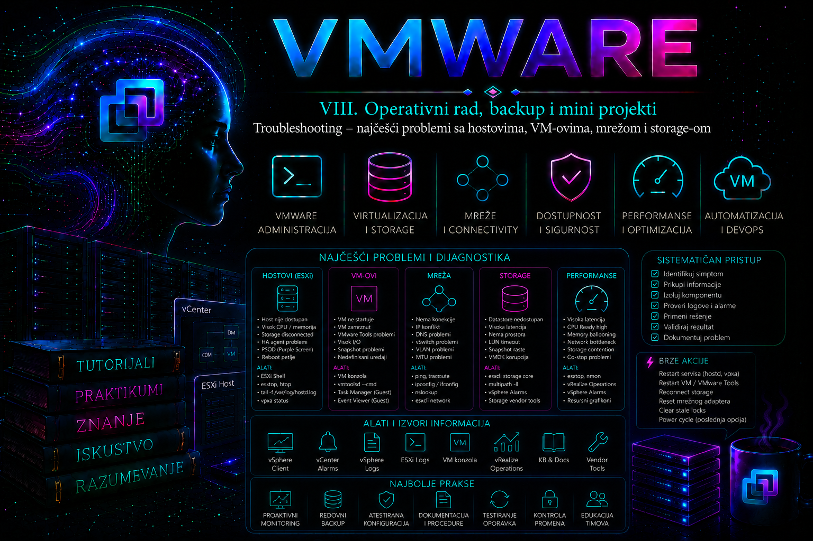

VMware

Napredni tutorijal
Troubleshooting u VMware vSphere okruženju predstavlja disciplinovan proces utvrđivanja osnovnog uzroka problema, a ne niz nasumičnih pokušaja promene konfiguracije dok sistem ponovo ne proradi. U enterprise okruženjima najveći broj prekida rada ne nastaje zbog jedne katastrofalne greške već zbog kombinacije više faktora: promene konfiguracije, pogrešne procene kapaciteta, neusaglašenosti između komponenti, zastarelog firmware-a, problema u fizičkoj infrastrukturi ili pogrešnih administrativnih odluka. Zbog toga se iskusan administrator nikada ne fokusira samo na simptom, već nastoji da razume kompletan lanac događaja koji je doveo do incidenta.
Najčešća greška manje iskusnih administratora jeste da odmah pokušaju restart servisa ili hosta. Takav pristup može privremeno ukloniti simptom, ali često uništava najvrednije dokaze koji omogućavaju pronalaženje pravog uzroka problema. Enterprise administracija zato podrazumeva prikupljanje podataka pre svake korektivne akcije, osim kada neposredna intervencija predstavlja jedini način da se spreči ozbiljniji prekid poslovanja.
Način razmišljanja tokom troubleshooting procesa
Bez obzira da li je problem nastao na ESXi hostu, virtuelnoj mašini, storage infrastrukturi ili mreži, postupak dijagnostike ostaje gotovo identičan.
- Potvrditi da problem zaista postoji.
- Utvrditi obim incidenta.
- Odrediti koje komponente učestvuju u problemu.
- Proveriti poslednje promene.
- Prikupiti događaje, alarme i logove.
- Formirati jednu ili više hipoteza.
- Dokazati ili odbaciti svaku hipotezu.
- Identifikovati osnovni uzrok.
- Izabrati najmanje rizičnu korektivnu akciju.
- Potvrditi potpuni oporavak.
- Dokumentovati incident.
Ovakav pristup značajno smanjuje mogućnost donošenja pogrešnih odluka pod pritiskom.
Prikupljanje početnih informacija
Pre bilo kakve promene administrator najpre prikuplja osnovne činjenice.
- Šta tačno ne radi?
- Kada je problem prvi put primećen?
- Da li je problem stalan ili povremen?
- Da li su pogođene sve virtuelne mašine ili samo pojedine?
- Da li su pogođeni svi hostovi ili samo jedan?
- Da li postoji zajednički storage?
- Da li je neposredno pre problema izvršena promena konfiguracije?
- Da li postoje aktivni alarmi u vCenter-u?
Veliki broj incidenata može biti rešen već tokom ove početne analize bez potrebe za složenijim dijagnostičkim postupcima.
Korelacija događaja umesto pojedinačnih simptoma
Enterprise okruženje proizvodi veliki broj logova. Nijedan log samostalno ne daje kompletnu sliku.
Na primer:
- VM može prijaviti timeout.
- Storage prijavljuje povećanu latenciju.
- ESXi evidentira APD događaj.
- Switch registruje gubitak linka.
- vCenter aktivira datastore alarm.
Pojedinačno, nijedan događaj nije dovoljan za zaključak. Tek njihov vremenski sled omogućava utvrđivanje osnovnog uzroka.
Klasifikacija problema
Problemi se najčešće dele na nekoliko grupa.
- Host problemi
- Virtual Machine problemi
- Storage problemi
- Mrežni problemi
- vCenter problemi
- HA i DRS problemi
- Problemi performansi
- Problemi autentikacije
- Problemi sertifikata
- Problemi sa backup sistemima
Ispravno određivanje kategorije ubrzava izbor odgovarajućih logova i alata.
Najvažniji izvori informacija
Administrator gotovo nikada ne koristi samo jedan alat.
| Alat | Namena |
|---|---|
| vSphere Client | Alarmi, događaji, stanje objekata |
| PowerCLI | Inventar, automatizacija, statistika |
| ESXCLI | Host konfiguracija |
| vim-cmd | Lokalna administracija hosta |
| govc | Automatizacija preko govmomi API-ja |
| esxtop | Performanse hosta |
service-control i VCSA logovi |
Status servisa i komponentni zapisi na vCenter Server Appliance-u |
| Log Bundle | Dubinska analiza incidenta |
Prvi korak – stanje hosta
Većina problema na kraju vodi do jednog ili više hostova. Zato administrator najpre proverava njihovo trenutno stanje.
esxcli system version getKomanda se izvršava na ESXi hostu kao root ili korisnik sa odgovarajućim privilegijama. Ne menja stanje sistema i potpuno je bezbedna za produkciju. Koristi se za potvrdu verzije ESXi-a, build broja i izdavanja, što je važno pri poređenju sa poznatim problemima iz Broadcom Knowledge Base baze.
esxcli system maintenanceMode getAdministrator proverava da li je host slučajno ostao u Maintenance Mode režimu nakon prethodnih radova.
esxcli hardware platform getPotvrđuje proizvođača, model i druge hardverske informacije koje mogu biti važne prilikom provere kompatibilnosti.
Provera zdravstvenog stanja hosta
Hardware Health prikazuje stanje senzora koje ESXi dobija preko proizvođačkog CIM interfejsa ili odgovarajućih drajvera.
Administrator posebno obraća pažnju na:
- temperaturu;
- napajanja;
- ventilatore;
- memorijske module;
- disk kontrolere;
- SMART upozorenja;
- RAID stanje.
Softverski simptom veoma često zapravo predstavlja posledicu hardverskog problema.
Najvažniji host logovi
| Log | Svrha |
|---|---|
/var/run/log/vmkernel.log |
VMkernel događaji, storage, mreža |
/var/run/log/vobd.log |
Hardware događaji i upozorenja |
/var/run/log/hostd.log |
Host management servis |
/var/run/log/vpxa.log |
Komunikacija sa vCenter-om |
/var/run/log/fdm.log |
HA agent |
Na aktuelnim ESXi izdanjima aktivni zapisi nalaze se u direktorijumu /var/run/log; putanje pod /var/log često postoje kao kompatibilne simboličke veze. Administrator treba da potvrdi stvarnu putanju pomoću readlink -f i da analizira vremenski period neposredno pre početka incidenta, a ne samo trenutak kada je problem prijavljen korisnicima.
Analiza VMkernel loga
VMkernel predstavlja jedan od najvažnijih izvora informacija.
U njemu se mogu pronaći:
- storage timeout-i;
- NFS problemi;
- iSCSI reconnect;
- APD i PDL događaji;
- VMFS greške;
- NIC reset;
- driver problemi;
- CPU scheduler događaji.
tail -n 200 /var/run/log/vmkernel.logKomanda prikazuje poslednjih 200 redova loga. Ne menja stanje sistema i pogodna je za brzu analizu neposredno nakon incidenta.
grep -i 'APD' /var/run/log/vmkernel.logFiltrira pojavljivanja APD (All Paths Down) događaja kako bi administrator utvrdio da li je host izgubio pristup storage-u.
Problemi sa hostd servisom
Host može biti dostupan virtuelnim mašinama, ali nedostupan za administraciju.
Simptomi:
- vCenter prijavljuje host kao Not Responding;
- SSH radi;
- VM normalno izvršavaju aplikacije;
- nije moguće otvoriti konfiguraciju hosta.
Najpre se proverava status servisa.
/etc/init.d/hostd statusAko servis nije aktivan, administrator analizira hostd.log pre bilo kakvog restarta.
Problemi komunikacije između hosta i vCenter-a
Komponenta vpxa predstavlja komunikacioni sloj između ESXi hosta i vCenter Server-a.
Kada komunikacija prestane, administrator proverava:
- DNS;
- NTP;
- sertifikate;
- Management mrežu;
- Firewall;
- vpxa.log;
- hostd.log.
Problemi virtuelnih mašina
Kod VM problema administrator razlikuje tri nivoa:
- problem gosta (Guest OS);
- problem virtuelnog hardvera;
- problem hipervizora.
Ako aplikacija ne radi, to još uvek ne znači da postoji VMware problem.
VM koji ne može da se uključi
Najčešći razlozi su:
- zaključan VMDK;
- nedostatak prostora;
- oštećen VMX fajl;
- nepostojeći datastore;
- nedostupan ISO;
- nepodržana konfiguracija.
Administrator najpre proverava događaje u vCenter-u, zatim VM logove.
Najvažniji log nalazi se u direktorijumu same virtuelne mašine.
vmware.logOn sadrži informacije o pokretanju VM-a, uređajima, snapshot-ovima, driverima i greškama.
Problemi sa VMware Tools
VMware Tools predstavljaju jednu od prvih komponenti koje administrator proverava.
Status se može proveriti preko PowerCLI-a.
Get-VM | Select Name,
@{N="Tools";E={$_.ExtensionData.Guest.ToolsRunningStatus}}Komanda se izvršava sa administratorske radne stanice na kojoj je instaliran PowerCLI. Ne menja stanje sistema i pogodna je za masovnu proveru statusa VMware Tools servisa na svim virtuelnim mašinama.
CPU problemi
Najčešći simptomi:
- spor rad VM;
- Ready vreme;
- Co-stop;
- CPU limit;
- prevelik broj vCPU.
Administrator potvrđuje nalaze pomoću:
- Performance Charts;
- esxtop;
- PowerCLI statistike.
Promena broja vCPU nikada ne predstavlja prvu korektivnu meru dok se ne potvrdi osnovni uzrok.
Problemi memorije
ESXi koristi više mehanizama upravljanja memorijom:
- Transparent Page Sharing;
- Ballooning;
- Compression;
- Swapping.
Ballooning nije automatski kvar. On predstavlja signal da host ulazi u stanje povećanog memorijskog pritiska i zahteva dodatnu analizu kapaciteta.
Storage troubleshooting
Storage incidenti često imaju najveći poslovni uticaj.
Administrator najpre razlikuje:
- potpun gubitak pristupa;
- visoku latenciju;
- sporadične timeout-e;
- probleme multipath-a;
- probleme kontrolera.
APD i PDL
Jedna od najvažnijih administratorskih odluka jeste razlikovanje APD i PDL događaja.
APD
- host ne može da pristupi storage-u;
- pretpostavlja da će se storage vratiti;
- putanje mogu ponovo postati dostupne.
PDL
- storage eksplicitno prijavljuje da uređaj više nije dostupan;
- potreban je drugačiji pristup oporavku;
- HA može reagovati drugačije nego kod APD događaja.
Mrežni troubleshooting
Mrežni problemi mogu nastati na:
- fizičkom switch-u;
- uplink adapteru;
- vSwitch-u;
- Distributed Switch-u;
- VMkernel adapteru;
- Port Group-i;
- virtuelnom NIC-u.
Administrator nikada ne pretpostavlja da je problem u VMware-u dok ne potvrdi stanje fizičke mreže.
Najčešći mrežni simptomi
- velika latencija;
- gubitak paketa;
- prekidi vMotion-a;
- nemogućnost pristupa datastore-u preko NFS-a;
- prekid Management mreže;
- spor backup.
Provera mrežnih adaptera
esxcli network nic listKomanda prikazuje fizičke mrežne adaptere, brzinu veze, stanje linka i korišćene drajvere. Ne menja konfiguraciju i predstavlja jednu od prvih provera pri sumnji na mrežni problem.
esxcli network ip interface listPrikazuje VMkernel interfejse i omogućava proveru IP konfiguracije, MTU vrednosti i povezanosti sa odgovarajućim mrežnim segmentima.
Storage adapteri
esxcli storage core adapter listAdministrator proverava da li su HBA adapteri pravilno inicijalizovani i da li ih ESXi uspešno prepoznaje.
esxcli storage core path listOmogućava proveru svih putanja prema LUN-ovima, njihovog trenutnog statusa i eventualnih degradacija multipath konfiguracije.
Problemi sa vMotion-om
Kada migracija ne uspe, administrator proverava:
- kompatibilnost CPU-a;
- EVC;
- vMotion VMkernel;
- MTU;
- dostupnost storage-a;
- licence;
- firewall;
- DNS.
Greška se potvrđuje analizom događaja u vCenter-u i logova na oba uključena hosta, jer neuspešna migracija često ostavlja trag na izvornoj i ciljnoj strani.
Problemi sa HA
HA incidenti najčešće uključuju:
- FDM agent;
- heartbeat mrežu;
- datastore heartbeating;
- Admission Control;
- izolaciju hosta;
- network partition.
Najvažniji log predstavlja:
/var/run/log/fdm.logAdministrator ga uvek analizira zajedno sa događajima iz vCenter-a kako bi razlikovao stvarni kvar hosta od problema u komunikacionoj infrastrukturi.
vCenter Server Appliance troubleshooting
Kada problem potiče iz samog vCenter Server Appliance-a, administrator koristi ugrađene servisne alate i Linux sistemske logove umesto pretpostavke da je problem na ESXi hostovima.
service-control --status --allKomanda se izvršava na VCSA preko appliance shell-a ili Bash okruženja sa administratorskim privilegijama. Prikazuje stanje svih servisa i ne menja konfiguraciju sistema.
tail -n 200 /var/log/vmware/vpxd/vpxd.logOva čitalačka komanda prikazuje poslednje zapise glavnog vCenter servisa. Za incident treba filtrirati odgovarajući vremenski interval i povezati ga sa vpxd-profiler.log, komponentnim logovima i ESXi zapisima; generičko oslanjanje na jednu pretpostavljenu systemd jedinicu nije pouzdana zamena za komponentnu dijagnostiku VCSA servisa.
PowerCLI kao alat za masovnu dijagnostiku
Velika okruženja zahtevaju automatizovanu proveru stanja.
Get-VMHost |
Select Name,
ConnectionState,
PowerState,
Version,
BuildKomanda omogućava brzu identifikaciju hostova koji odstupaju od standardne konfiguracije ili koriste različite build verzije, što može biti uzrok nekonzistentnog ponašanja klastera.
Kada prikupljati Support Bundle
Support Bundle nije namenjen samo komunikaciji sa proizvođačem. On predstavlja kompletan skup logova i konfiguracionih informacija koji omogućava detaljnu forenzičku analizu incidenta.
Preporučuje se njegovo prikupljanje kada:
- problem nije moguće jednoznačno reprodukovati;
- incident uključuje više hostova;
- postoji sumnja na grešku drajvera ili firmware-a;
- potrebna je eskalacija prema Broadcom podršci.
Najčešće administratorske greške tokom troubleshooting-a
- restart servisa bez pregleda logova;
- istovremena promena više parametara;
- nepostojanje vremenske linije događaja;
- zanemarivanje fizičke infrastrukture;
- neproveravanje poslednjih promena;
- zaključivanje na osnovu jednog alarma;
- brisanje privremenih logova pre analize;
- nedokumentovanje izvedenih korektivnih akcija.
Administratorski model razmišljanja
Najvrednija veština VMware administratora nije poznavanje velikog broja komandi već sposobnost sistematične analize. Simptom gotovo nikada nije isto što i uzrok. Dobar administrator razlikuje poslovni problem od tehničkog simptoma, prikuplja dokaze pre intervencije, povezuje događaje iz više izvora, proverava hipoteze najmanje invazivnim metodama i tek nakon potvrde osnovnog uzroka sprovodi korektivnu akciju. Takav pristup smanjuje rizik od dodatnih prekida rada, ubrzava oporavak sistema i obezbeđuje da svaka rešena situacija postane izvor znanja za buduće incidente, što predstavlja osnovu pouzdanog upravljanja enterprise VMware infrastrukturom.
Laboratorijski cilj
Prvi deo praktikuma uspostavlja kontrolisano troubleshooting okruženje i obučava administratora da prikuplja dokaze pre intervencije. Vežbe napreduju od evidentiranja početnog stanja i pripreme dijagnostičkih alata do rešavanja problema sa upravljanjem ESXi hostom, pokretanjem virtuelne mašine i osnovnom mrežnom povezanošću.
Sve promene izvode se isključivo na laboratorijskim objektima. U produkcionom okruženju isti postupci zahtevaju odobren zahtev za promenu, definisan plan povratka, procenu poslovnog uticaja i koordinaciju sa vlasnicima aplikacija, mreže i storage sistema.
Laboratorijska topologija
- jedan vCenter Server Appliance:
vcsa01.lab.local; - dva ESXi hosta:
esxi01.lab.localiesxi02.lab.local; - jedan laboratorijski klaster:
CL-LAB01; - jedan zajednički datastore:
DS-SHARED01; - jedan lokalni datastore na svakom hostu;
- Management mreža:
10.100.80.0/24; - VM mreža: VLAN 120, Port Group
PG-LAB-VM; - administratorska radna stanica sa vSphere Client pristupom, SSH klijentom i aktuelnim VCF PowerCLI modulima;
- test virtuelne mašine:
vm-app01ivm-nettest01.
Ako laboratorija ima samo jedan ESXi host, vežbe se mogu izvesti uz lokalni datastore, ali se neće proveravati ponašanje zajedničkih resursa i poređenje rezultata između hostova.
Potrebni nalozi i privilegije
- vCenter nalog sa privilegijama za pregled inventara, događaja, alarma, zadataka, konfiguracije hostova i virtuelnih mašina;
- poseban laboratorijski administratorski nalog za promene VM i mrežne konfiguracije;
- root ili ekvivalentan lokalni administratorski pristup ESXi hostu za ograničene CLI provere;
- PowerCLI nalog sa najmanjim privilegijama potrebnim za čitanje inventara i statistike;
- Guest OS administratorski pristup test virtuelnim mašinama.
Za svakodnevnu dijagnostiku ne treba automatski koristiti globalni Administrator nalog. Čitalačke provere, prikupljanje inventara i pregled događaja treba obavljati nalogom sa read-only ili prilagođenom troubleshooting ulogom, dok se privilegovani nalog koristi tek kada je promena zaista potrebna.
Vežba 1 – Formiranje početnog stanja i vremenske linije incidenta
Cilj i kontekst
Administrator prima prijavu da se „VMware povremeno usporava”. Takva prijava nije dovoljno precizna za tehničku intervenciju. Cilj vežbe je da se neodređen simptom pretvori u proverljiv incident, ograniči njegov obim i sačuva početno stanje pre bilo kakve promene.
Rizik
Vežba je čitalačka i ne menja stanje infrastrukture. Rizik nastaje samo ako administrator pogrešno zaključi da odsustvo aktivnog alarma znači da problem nije postojao. Alarmi mogu već biti vraćeni u zeleno stanje, ručno potvrđeni ili neadekvatno konfigurisani.
Korak 1 – Preciziranje simptoma
Za prijavljeni problem zabeležiti:
- tačno vreme početka i završetka simptoma;
- vremensku zonu osobe koja je prijavila problem;
- naziv aplikacije i virtuelne mašine;
- pogođene korisnike i lokacije;
- da li je problem stalan, periodičan ili jednokratan;
- konkretnu grešku, timeout ili merljivo vreme odziva;
- poslednju poznatu funkcionalnu tačku;
- promene izvršene neposredno pre incidenta.
Umesto zapisa „VM je bio spor”, prihvatljiv opis glasi: „Virtuelna mašina vm-app01 bila je dostupna, ali je aplikacioni odgovor između 10:14 i 10:22 porastao sa približno dve na više od dvadeset sekundi; problem su prijavili svi korisnici aplikacije, dok druge VM na istom hostu nisu imale potvrđen simptom.”
Korak 2 – Pregled događaja i zadataka kroz GUI
- Prijaviti se u vSphere Client.
- Izabrati
vm-app01. - Otvoriti
Monitor, zatimTasks and Events. - Postaviti vremenski interval koji počinje najmanje petnaest minuta pre prijavljenog simptoma i završava se najmanje petnaest minuta posle njega.
- Pregledati događaje za VM, njen ESXi host, datastore i klaster.
- Zabeležiti migracije, snapshot operacije, backup aktivnosti, promene konfiguracije, HA događaje, storage alarme i gubitke mrežne redundanse.
Događaji moraju biti povezani sa vremenom i objektom. Snapshot kreiran dva dana ranije nije automatski uzrok današnjeg incidenta, ali snapshot consolidate operacija koja je počela minut pre porasta storage latencije predstavlja relevantnu činjenicu.
Korak 3 – PowerCLI snimak inventara
Na administratorskoj radnoj stanici pokrenuti PowerShell i povezati se sa vCenter Server-om:
Connect-VIServer -Server vcsa01.lab.localKomanda uspostavlja sesiju prema vCenter Server-u. Ne menja stanje infrastrukture. Koristiti imenovani nalog, a lozinku ne upisivati u skriptu kao običan tekst.
Prikupiti stanje hostova:
Get-VMHost |
Select-Object Name, ConnectionState, PowerState, Version, Build |
Sort-Object NameGet-VMHost vraća hostove kojima upravlja povezana vCenter instanca. Očekuje se da hostovi prikazuju Connected i PoweredOn, osim ako je drugačije planirano. Zvanična PowerCLI referenca potvrđuje da je cmdlet namenjen preuzimanju host objekata sa vCenter Server-a ili direktno povezanog ESXi hosta.
Prikupiti VM stanje:
Get-VM |
Select-Object Name, PowerState,
@{N='VMHost';E={$_.VMHost.Name}},
@{N='Datastore';E={($_ | Get-Datastore).Name -join ','}} |
Sort-Object NameSačuvati rezultat u CSV fajl:
$stamp = Get-Date -Format 'yyyyMMdd-HHmmss'
Get-VMHost |
Select-Object Name, ConnectionState, PowerState, Version, Build |
Export-Csv ".\vmhost-baseline-$stamp.csv" -NoTypeInformation -Encoding UTF8
Get-VM |
Select-Object Name, PowerState,
@{N='VMHost';E={$_.VMHost.Name}},
@{N='Datastore';E={($_ | Get-Datastore).Name -join ','}} |
Export-Csv ".\vm-baseline-$stamp.csv" -NoTypeInformation -Encoding UTF8Korak 4 – Evidentiranje alarma
Get-AlarmDefinition |
Where-Object {$_.Enabled -eq $true} |
Select-Object Name, Description |
Sort-Object NameOva komanda prikazuje omogućene definicije alarma, ali ne dokazuje da su svi važni alarmi pravilno podešeni. Aktivne alarme dodatno proveriti u vSphere Client-u na nivou vCenter-a, datacentra, klastera, hosta, datastore-a i VM-a.
Očekivani rezultat i validacija
Administrator treba da ima:
- precizno formulisan simptom;
- definisan vremenski interval istrage;
- spisak pogođenih i nepogođenih objekata;
- CSV inventar hostova i VM-ova;
- evidenciju relevantnih događaja, alarma i poslednjih promena;
- najmanje jednu početnu hipotezu koja još nije proglašena uzrokom.
Troubleshooting grane
- Ako ne postoji precizno vreme incidenta, analizirati aplikacione, operativne i infrastrukturne logove kako bi se vremenski prozor suzio.
- Ako vCenter događaji više nisu dostupni, proveriti centralni syslog, SIEM, backup platformu i sistem za upravljanje promenama.
- Ako se vreme u Guest OS-u razlikuje od vCenter i ESXi vremena, prvo zabeležiti odstupanje; ne menjati vreme usred istrage bez razumevanja posledica po log korelaciju.
- Ako je više hostova na različitim build verzijama, evidentirati odstupanje za dalju proveru kompatibilnosti i poznatih problema, ali ga ne proglašavati uzrokom bez dokaza.
Rollback
Nije potreban jer nijedna konfiguracija nije promenjena. Dijagnostičke fajlove treba sačuvati u direktorijumu incidenta sa ograničenim pristupom.
Vežba 2 – Prikupljanje host dokaza i kreiranje dijagnostičkog paketa
Cilj i kontekst
Host esxi01.lab.local prijavio je kratkotrajan storage alarm, ali se alarm povukao pre početka istrage. Cilj je prikupiti relevantne logove i konfiguracione podatke dok su tragovi još dostupni, bez restartovanja servisa ili hosta.
Preduslovi
- SSH je privremeno omogućen na laboratorijskom hostu ili je dostupan ESXi Shell preko DCUI konzole;
- poznat je približan vremenski prozor incidenta;
- na datastore-u ili drugoj ciljnoj lokaciji postoji dovoljno slobodnog prostora za support bundle;
- administrator ima odobren root pristup laboratorijskom hostu.
Upozorenje o riziku
Čitanje logova je bezbedno. Generisanje kompletnog support bundle-a troši CPU, memoriju, I/O i privremeni prostor, pa ga na preopterećenom produkcionom hostu treba pokretati planski. Paket može sadržati nazive hostova, IP adrese, konfiguraciju, korisnička imena i druge osetljive infrastrukturne podatke. Ne sme se čuvati na javno dostupnoj lokaciji.
Korak 1 – Potvrda identiteta i vremena hosta
esxcli system version get
esxcli system hostname get
esxcli system time getKomande se izvršavaju na ESXi hostu kao root. Ne menjaju stanje. Njihov rezultat potvrđuje da se istraga vodi na ispravnom hostu, prikazuje instaliranu verziju i omogućava poređenje vremena hosta sa vCenter-om i drugim sistemima.
Korak 2 – Pregled prostora pre prikupljanja
vdf -h
df -hvdf -h prikazuje ESXi RAM diskove i njihove kapacitete, dok df -h prikazuje montirane filesystem-e i datastore lokacije dostupne hostu. Ako komanda dugo ne vraća rezultat, to može ukazivati na problem sa storage pristupom. U takvoj situaciji ne treba nekritički restartovati management agente, jer oni mogu čekati odgovor nedostupnog storage uređaja. Broadcom dokumentuje slučajeve u kojima su host nedostupnost i blokirane management operacije bile posledica storage problema, iako su VM nastavile da rade.
Korak 3 – Identifikovanje aktuelnih putanja logova
ls -lh /var/run/log/vmkernel.log
ls -lh /var/run/log/vobd.log
ls -lh /var/run/log/hostd.log
ls -lh /var/run/log/vpxa.logNa aktuelnim ESXi izdanjima aktivni logovi nalaze se pod /var/run/log; putanje pod /var/log mogu biti simboličke veze radi kompatibilnosti. Broadcom-ova dokumentacija grupiše logove prema komponenti koja ih generiše i navodi /var/run/log kao njihovu aktivnu lokaciju.
Korak 4 – Ograničeni pregled relevantnih logova
tail -n 200 /var/run/log/vmkernel.log
tail -n 200 /var/run/log/vobd.log
tail -n 200 /var/run/log/hostd.log
tail -n 200 /var/run/log/vpxa.logNe kopirati samo red koji sadrži reč error. Sačuvati kontekst pre i posle događaja. Za storage incident mogu biti relevantni obrasci:
APDiPDL;NMPiScsiDeviceIO;Device or filesystem with identifier;Lost access to volume;Restored access to volume;All Paths Down;Permanent Device Loss.
Primer filtriranja:
grep -Ei 'APD|PDL|NMP|ScsiDeviceIO|Lost access|Restored access' \
/var/run/log/vmkernel.logRezultat treba povezati sa vobd.log, vCenter alarmom, storage sistemskim logom i događajima fizičkog SAN ili Ethernet switch-a. Jedna SCSI poruka bez vremenskog i infrastrukturnog konteksta nije dovoljna za zaključak.
Korak 5 – Kreiranje support bundle-a kroz GUI
- U vSphere Client-u izabrati
esxi01.lab.local. - Izabrati
Actions, zatim opciju za izvoz sistemskih logova. - Obuhvatiti relevantne host komponente, a ne samo minimalni ili osnovni skup.
- Uneti kratak opis incidenta i vremenski interval u evidenciju tiketa.
- Preuzeti generisani paket na zaštićenu administratorsku lokaciju.
Izbor samo osnovne grupe može izostaviti pojedine host i VM logove iz paketa, uključujući vmkernel.log, hostd.log, vpxa.log i VM vmware.log. Zbog toga pre izvoza treba proveriti koje su komponente uključene.
Korak 6 – Kreiranje support bundle-a kroz CLI
vm-support -hNajpre se prikazuje pomoć zato što raspoložive opcije zavise od verzije ESXi-a. Komanda samo prikazuje podržane parametre.
Za kompletno prikupljanje:
vm-supportZa upis na datastore sa dovoljno prostora:
vm-support -w /vmfs/volumes/DS-SHARED01vm-support je zvanični ESXi alat za prikupljanje dijagnostičkih informacija. Broadcom preporučuje proveru opcija pomoću vm-support -h, a parametar -w omogućava izbor ciljne VMFS lokacije.
Po završetku zabeležiti punu putanju i veličinu paketa:
ls -lh /vmfs/volumes/DS-SHARED01/*support*.tgzOčekivani rezultat
- potvrđena je verzija, naziv i vreme hosta;
- pregledani su ključni logovi u odgovarajućem vremenskom prozoru;
- support bundle je uspešno kreiran;
- paket je kopiran sa hosta na kontrolisanu lokaciju;
- dokazi su prikupljeni pre bilo kakvog restarta.
Moguće greške i troubleshooting grane
- Ako support bundle preko vCenter-a istekne, pokušati direktno sa ESXi CLI-ja. Direktno izvršavanje
vm-supportmože završiti i kada izvoz kroz vCenter dostigne timeout. - Ako nema dovoljno prostora, ne brisati nasumično sistemske fajlove. Izabrati drugi datastore ili ograničen skup komponenti prema zvaničnoj podršci.
- Ako se logovi rotiraju prebrzo, odmah sačuvati relevantne fajlove i proveriti centralni syslog. Hostd, vpxa i vpxd logovi se rotiraju, pa se dokaz može izgubiti pri visokoj učestalosti zapisa.
- Ako su SSH i ESXi Shell ugašeni, koristiti GUI izvoz ili DCUI u skladu sa bezbednosnom procedurom.
- Ako komande koje pristupaju datastore-u vise, prekinuti dalje invazivne pokušaje i preusmeriti istragu na storage dostupnost.
Rollback i čišćenje
- Potvrditi da je bundle bezbedno preuzet.
- Ukloniti laboratorijski bundle sa datastore-a ako više nije potreban.
- Isključiti SSH i ESXi Shell ako su privremeno omogućeni.
- U Security Profile ili odgovarajućem GUI prikazu proveriti da servisi više nisu aktivni.
- Zabeležiti ko je, kada i zbog čega koristio privilegovani pristup.
Vežba 3 – Host je Disconnected ili Not Responding, a VM nastavljaju da rade
Cilj i kontekst
vCenter prikazuje esxi01.lab.local kao Disconnected ili Not Responding, ali aplikacije na njegovim VM-ovima i dalje odgovaraju. Cilj je razlikovati problem upravljačke ravni od potpunog kvara hosta i izbeći nepotreban restart.
Početno stanje
- VM na hostu su uključene;
- Guest OS mrežna dostupnost je potvrđena;
- host nije planski uklonjen iz inventara;
- ne postoji odobrenje za restart hosta;
- prikupljeni su početni događaji i vreme pojave problema.
Upozorenje o riziku
Ne pokretati services.sh restart na produkcionom hostu kao rutinsku prvu meru. Takav širok restart utiče na više management servisa, može poremetiti tekuće operacije i nije odgovarajući za hostove koji koriste određene dodatne komponente. Ne restartovati host dok VM rade, osim u okviru odobrene procedure oporavka.
Korak 1 – Potvrda obima
Sa administratorske radne stanice proveriti:
ping esxi01.lab.local
nslookup esxi01.lab.local
nslookup 10.100.80.11Ping potvrđuje samo ICMP dostupnost, ne i ispravnost hostd, vpxa, HTTPS ili DNS konfiguracije. Forward i reverse DNS rezultat treba da budu međusobno usklađeni.
Proveriti HTTPS port odgovarajućim sistemskim alatom, na primer:
Test-NetConnection esxi01.lab.local -Port 443Komanda se izvršava u PowerShell-u na Windows administratorskoj stanici. Ne menja stanje i potvrđuje da li je TCP port 443 dostupan sa konkretne mrežne lokacije.
Korak 2 – Poređenje vCenter i direktnog pristupa
- Pokušati otvaranje ESXi Host Client-a direktno preko FQDN-a.
- Ako direktan pristup radi, proveriti da li je problem ograničen na vCenter–host komunikaciju.
- Ako direktan pristup ne radi, ali SSH radi, proveriti management servise.
- Ako ni SSH ni HTTPS ne rade, proveriti Management VMkernel, VLAN, uplink i fizičku mrežu.
Korak 3 – Provera hostd servisa
Na ESXi hostu:
/etc/init.d/hostd statusKomanda je čitalačka. Očekivani rezultat pokazuje da je hostd aktivan. Broadcom-ov postupak za hostd troubleshooting započinje proverom mrežne povezanosti, statusa hostd servisa i dostupnosti upravljačkih portova.
Proveriti portove i aktivne veze:
esxcli network ip connection list | grep -E ':443|:80|:902'Komanda ne menja stanje i omogućava proveru da li odgovarajući proces sluša ili održava veze na očekivanim portovima.
Korak 4 – Analiza hostd i vpxa logova
tail -n 250 /var/run/log/hostd.log
tail -n 250 /var/run/log/vpxa.logTražiti:
- ponovljene greške povezivanja;
- SSL ili certificate poruke;
- DNS i name resolution greške;
- timeout prema datastore-u;
- nedostatak prostora ili file descriptor-a;
- prekide vpxa veze prema vCenter-u;
- pad ili ponovno pokretanje procesa.
Ako hostd i vpxa istovremeno prestanu da ažuriraju logove, proveriti syslog opterećenje i storage čekanja. Prekomerni upisi u syslog mogu blokirati servise i dovesti do prekida veze sa vCenter-om.
Korak 5 – Provera vremena i DNS-a
esxcli system time get
esxcli network ip dns server list
esxcli network ip dns search listProveriti da host može da razreši vCenter FQDN:
nslookup vcsa01.lab.localVeliko vremensko odstupanje može izazvati autentikacione i sertifikatske probleme, dok pogrešan DNS može dovesti do nestabilnog reconnect ponašanja.
Korak 6 – Kontrolisani reconnect kroz GUI
Ako su management mreža, DNS, vreme, hostd i vpxa dostupni i ne postoje dokazi o dubljem storage ili sistemskom problemu:
- u vSphere Client-u izabrati host;
- pokrenuti
ConnectioniliReconnectoperaciju; - uneti odgovarajuće privilegovane podatke samo ako su zahtevani;
- pratiti Recent Tasks i Events;
- potvrditi da host prelazi u
Connectedstanje.
Reconnect ne treba koristiti kao zamenu za analizu. Ako se problem ponavlja, osnovni uzrok nije otklonjen.
Korak 7 – Ograničeni restart management agenta
Ovaj korak izvodi se samo u laboratoriji ili u odobrenom produkcionom incidentu nakon prikupljanja logova.
/etc/init.d/hostd restartKomanda menja stanje host management servisa. Ne gasi uključene VM, ali privremeno prekida lokalne management operacije i može uticati na tekuće administrativne zadatke.
Ako je problem ograničen na vCenter agent i dokazi to potvrđuju:
/etc/init.d/vpxa restartPosle svake pojedinačne promene proveriti rezultat pre prelaska na sledeću. Ne restartovati oba servisa istovremeno bez potrebe, jer se time gubi mogućnost da se utvrdi koja je akcija rešila problem.
Validacija oporavka
- host je u stanju
Connected; - vSphere Client prikazuje aktuelne host metrike;
- Tasks and Events se ažuriraju;
- VM inventar je potpun;
- datastore-i i mreže su vidljivi;
- HA agent, ako se koristi, nije ostao u stanju greške;
- Guest OS aplikacije nisu pretrpele prekid;
- u hostd i vpxa logovima nema novog ponavljajućeg obrasca greške.
Troubleshooting grane
- Ako je hostd aktivan, ali 443 nije dostupan, proveriti ESXi firewall, lokalne veze i mrežni put.
- Ako
df -hili pristup logovima visi, preusmeriti istragu na storage sloj umesto ponovnog restarta agenta. - Ako se host poveže pa ponovo isključi, uporediti vpxa i vCenter vpxd logove u istom vremenskom prozoru.
- Ako više hostova istovremeno izgubi vezu, tražiti zajedničku zavisnost: vCenter, DNS, NTP, management VLAN, fizički switch ili centralni syslog.
- Ako samo ime hosta ne radi, a IP pristup radi, ne dodavati host ponovo po IP adresi kao trajno rešenje; ispraviti DNS i sertifikatske zavisnosti.
Rollback
Ako je laboratorijski problem simuliran privremenim blokiranjem management komunikacije, vratiti prethodno pravilo ili mrežnu konfiguraciju. Ako su SSH ili Shell uključeni, isključiti ih. Ne postoji rollback za restartovan management servis, pa pre tog koraka mora biti sačuvan dokazni materijal.
Vežba 4 – Virtuelna mašina ne može da se uključi zbog nedostupnog uređaja ili pogrešne konfiguracije
Cilj i kontekst
Test VM vm-app01 ne može da se uključi nakon prenosa laboratorijskog ISO fajla na drugu lokaciju. Cilj je utvrditi razlog neuspeha iz zadatka, događaja i VM loga, a zatim izvršiti najmanju potrebnu korekciju.
Preduslovi i početno stanje
- VM je isključena;
- VM konfiguracija i VMDK fajlovi su dostupni;
- virtuelni CD/DVD uređaj referencira ISO koji više ne postoji ili nije dostupan hostu;
- ne postoje aktivne snapshot ili backup operacije;
- administrator ima privilegiju za promenu VM uređaja i uključivanje VM-a.
Upozorenje o riziku
Ne uklanjati virtuelni disk kada se zapravo rešava problem optičkog uređaja. Pre svake izmene potvrditi naziv uređaja, backing objekat i poslovnu svrhu. Pogrešno uklanjanje VMDK uređaja može dovesti do nedostupnosti podataka.
Korak 1 – Reprodukcija i čuvanje poruke
- U vSphere Client-u izabrati
vm-app01. - Pokrenuti
Power On. - Sačekati završetak zadatka.
- Otvoriti neuspešan task i kopirati punu poruku, vreme, objekat i task identifikator u radne beleške.
Ne koristiti samo kratku poruku iz iskačućeg obaveštenja. Detalji zadatka često sadrže konkretan uređaj ili fajl koji sprečava pokretanje.
Korak 2 – Pregled konfiguracije kroz GUI
- Otvoriti
Edit Settings. - Proveriti CD/DVD Drive backing.
- Proveriti opciju
Connect at power on. - Ne čuvati promenu dok se ne potvrdi da ISO zaista ne postoji ili nije dostupan hostu.
- U Datastore Browser-u proveriti navedenu putanju.
Korak 3 – PowerCLI validacija uređaja
$vm = Get-VM -Name 'vm-app01'
Get-CDDrive -VM $vm |
Select-Object Parent, Name, IsoPath, HostDevice, ConnectionStateKomanda ne menja stanje i prikazuje backing virtuelnog optičkog uređaja. Ako IsoPath pokazuje na nepostojeći datastore ili fajl, hipoteza je potvrđena.
Pregledati i virtuelne diskove bez izmene:
Get-HardDisk -VM $vm |
Select-Object Parent, Name, Filename, CapacityGB, StorageFormatTime se potvrđuje da VMDK uređaji postoje i da problem nije pogrešno pripisan disku.
Korak 4 – Pregled VM loga
Odrediti direktorijum VM-a preko Datastore Browser-a ili PowerCLI-a, a zatim na hostu pregledati poslednje redove:
tail -n 200 /vmfs/volumes/DS-SHARED01/vm-app01/vmware.logTražiti poruke koje sadrže naziv uređaja, ISO putanju, File not found, Unable to access ili neuspeh povezivanja backing objekta. Analizirati log iz tačnog pokušaja uključivanja, jer stariji vmware-*.log fajlovi mogu sadržati prethodne, nepovezane incidente.
Korak 5 – Najmanja korektivna promena kroz GUI
Ako ISO više nije potreban:
- u
Edit Settingspronaći CD/DVD uređaj; - isključiti
Connect at power on; - po potrebi izabrati
Client Deviceumesto nepostojećeg ISO-a; - sačuvati promenu;
- ponovo pokrenuti VM.
Ako je ISO potreban za rad VM-a, vratiti fajl na dostupnu lokaciju ili izabrati ispravnu ISO putanju umesto isključivanja uređaja.
PowerCLI korekcija
Sledeća komanda menja VM konfiguraciju i koristi se samo nakon potvrđenog uzroka:
Get-CDDrive -VM $vm |
Set-CDDrive -NoMedia -Confirm:$false-NoMedia uklanja postojeći backing sa optičkog uređaja, ali ne uklanja sam uređaj. Pre izvršavanja proveriti da VM ne zavisi od montiranog medija.
Očekivani rezultat i provera uspeha
- nepostojeći ISO više nije povezan pri uključivanju;
- Power On task završava bez greške;
- VM prelazi u
PoweredOnstanje; - Guest OS završava pokretanje;
- VMware Tools, ako je instaliran, prelazi u aktivno stanje;
- aplikaciona ili mrežna provera VM-a uspeva;
- novi
vmware.logne sadrži ponovljenu grešku istog uređaja.
Troubleshooting grane
- Ako problem ostaje nakon uklanjanja ISO reference, vratiti se na detalje novog taska; ne pretpostavljati da je prvi nalaz bio jedini uzrok.
- Ako je VMX fajl nedostupan, proveriti datastore dostupnost i prava pristupa pre uređivanja fajla.
- Ako postoji zaključan VMDK, utvrditi koji host ili proces drži lock; ne brisati lock fajlove nasumično.
- Ako nema dovoljno slobodnog prostora, proveriti datastore, snapshot lanac i potrebe za swap fajlom pre proširenja ili brisanja podataka.
- Ako se VM uključi, ali Guest OS ne podigne sistem, problem je prešao sa hipervizorskog Power On nivoa na Guest OS boot troubleshooting.
Rollback
Ako je ISO potreban, ponovo izabrati originalni medij nakon što je vraćen na dostupnu i odobrenu lokaciju. Sačuvati prethodnu putanju u promeni kako bi konfiguracija mogla tačno da se rekonstruiše.
Vežba 5 – VM nema mrežnu povezivost zbog pogrešne Port Group konfiguracije
Cilj i kontekst
vm-nettest01 je uključena i Guest OS radi, ali nema pristup svom default gateway-u. Druge VM na istoj mreži rade normalno. Cilj je lokalizovati problem od Guest OS-a prema virtuelnom i fizičkom mrežnom sloju i ispraviti pogrešno dodeljenu Port Group bez nepotrebne promene switch konfiguracije.
Preduslovi i početno stanje
- VM ima instaliran i aktivan VMware Tools paket;
- poznata je očekivana IP adresa, maska, gateway i VLAN;
- referentna VM na
PG-LAB-VMima funkcionalnu komunikaciju; - test VM je greškom povezana na
PG-LAB-ISOLATEDili drugu pogrešnu Port Group; - nema planiranih mrežnih radova.
Upozorenje o riziku
Ne menjati VLAN ID cele Port Group-e zbog problema jedne VM dok se ne potvrdi da su sve VM na toj Port Group-i pogrešno konfigurisane. Promena VLAN-a na zajedničkoj Port Group-i može istovremeno prekinuti komunikaciju velikog broja sistema.
Korak 1 – Potvrda Guest OS simptoma
U Linux Guest OS-u:
ip address show
ip route show
ping -c 4 127.0.0.1
ping -c 4 <lokalna-IP-adresa>
ping -c 4 <default-gateway>U Windows Guest OS-u:
ipconfig /all
route print
ping 127.0.0.1
ping <lokalna-IP-adresa>
ping <default-gateway>Ako lokalni TCP/IP testovi rade, a gateway ne odgovara, problem može biti u Guest OS VLAN-u, virtuelnom adapteru, Port Group-i, uplink-u ili fizičkoj mreži.
Korak 2 – Provera virtuelnog adaptera kroz GUI
- Izabrati
vm-nettest01. - Otvoriti
Edit Settings. - Proveriti da je mrežni adapter prisutan.
- Proveriti
ConnectediConnect at power on. - Zabeležiti naziv dodeljene Port Group-e.
- Uporediti ga sa funkcionalnom referentnom VM.
Korak 3 – PowerCLI poređenje
Get-NetworkAdapter -VM 'vm-nettest01' |
Select-Object Parent, Name, Type, NetworkName, ConnectionStateZa referentnu VM:
Get-NetworkAdapter -VM 'vm-app01' |
Select-Object Parent, Name, Type, NetworkName, ConnectionStateAko se NetworkName razlikuje, proveriti CMDB, mrežni dizajn i dokumentaciju promene pre korekcije.
Korak 4 – Provera host mreže
Na ESXi hostu na kojem radi VM:
esxcli network nic listKomanda prikazuje fizičke NIC adaptere, link status, brzinu, duplex i drajver. Ne menja stanje.
esxcli network ip interface listOva komanda prikazuje VMkernel interfejse, ne VM vNIC uređaje. Koristi se za potvrdu šireg stanja host mreže, ali sama po sebi ne dokazuje da je konkretna VM Port Group ispravna.
Za standardni vSwitch:
esxcli network vswitch standard list
esxcli network vswitch standard portgroup listProveriti da očekivana Port Group postoji i da je povezana sa pravim standardnim vSwitch-em. Kod vSphere Distributed Switch-a primarnu proveru obaviti u vCenter-u, jer se konfiguracija distribuira i njome se centralno upravlja.
Korak 5 – Bezbedna korekcija samo pogođene VM
Kroz GUI promeniti Network Adapter sa pogrešne mreže na PG-LAB-VM i sačuvati konfiguraciju.
PowerCLI alternativa:
$adapter = Get-NetworkAdapter -VM 'vm-nettest01'
Set-NetworkAdapter -NetworkAdapter $adapter `
-NetworkName 'PG-LAB-VM' `
-Connected:$true `
-StartConnected:$true `
-Confirm:$falseKomanda menja stanje virtuelnog adaptera i može trenutno prekinuti postojeću VM komunikaciju. Zato pre izvršavanja treba potvrditi da je ciljna Port Group odgovarajuća i da se korekcija izvodi u odobrenom periodu.
Korak 6 – Validacija
U Guest OS-u ponoviti:
ping -c 4 <default-gateway>
ping -c 4 <DNS-server>Zatim proveriti aplikacioni port, ne samo ICMP. Na primer:
curl -I http://<test-servis>ili u PowerShell-u:
Test-NetConnection <test-servis> -Port 443Očekivani rezultat
- VM je povezana na dokumentovanu Port Group-u;
- virtuelni adapter je Connected i StartConnected;
- gateway i DNS server su dostupni;
- odgovarajući aplikacioni port je dostupan;
- druge VM nisu pretrpele prekid;
- vCenter događaj prikazuje samo planiranu promenu adaptera pogođene VM.
Troubleshooting grane
- Ako sve VM na istoj Port Group-i imaju problem, proveriti VLAN, teaming, uplink i fizički trunk umesto pojedinačnih VM postavki.
- Ako problem prati VM tokom vMotion-a, verovatniji su VM ili distribuirana mrežna konfiguracija nego jedan fizički NIC.
- Ako problem ostaje samo na jednom hostu, uporediti uplink, VLAN i Distributed Switch stanje između hostova.
- Ako gateway radi, ali DNS ne radi, odvojiti name resolution problem od osnovne IP povezanosti.
- Ako adapter nije vidljiv u Guest OS-u, proveriti VMware Tools, Guest OS drajver i tip virtuelnog adaptera.
- Ako postoji sporadičan gubitak paketa, proveriti NIC greške, packet drops, duplex, MTU i fizički switch port, a ne samo Port Group naziv.
Rollback
Vratiti Network Adapter na prethodnu Port Group samo ako je prethodna konfiguracija bila namerna i dokumentovana. U laboratorijskoj simulaciji vratiti VM na PG-LAB-VM, potvrditi mrežnu dostupnost i evidentirati da je pogrešna Port Group bila kontrolisano izazvan kvar.
Kontrolna tačka nakon prvog dela praktikuma
Administrator je uspešno završio prvi deo praktikuma ako može samostalno da:
- pretvori neodređenu korisničku prijavu u precizno definisan i vremenski ograničen tehnički simptom;
- odredi pogođene i nepogođene hostove, VM-ove, mreže, datastore-e i korisnike;
- prikupi početni inventar hostova i virtuelnih mašina pomoću PowerCLI-a bez menjanja infrastrukture;
- sačuva početno stanje u vremenski označene CSV fajlove;
- poveže vCenter zadatke, događaje i alarme sa vremenom prijavljenog incidenta;
- proveri verziju, naziv, vreme i raspoloživi prostor ESXi hosta pre prikupljanja logova;
- pronađe aktuelne
vmkernel,vobd,hostdivpxalogove i objasni ulogu svakog od njih; - filtrira storage i management događaje bez gubitka vremenskog konteksta;
- kreira ESXi support bundle kroz vSphere Client i pomoću komande
vm-support; - proceni uticaj prikupljanja dijagnostičkog paketa na kapacitet i performanse hosta;
- bezbedno prenese, zaštiti i ukloni dijagnostički paket kada više nije potreban;
- razlikuje problem upravljačke ravni od potpunog kvara ESXi hosta;
- proveri DNS, vreme, upravljačke portove, hostd i vpxa pre pokušaja reconnect operacije;
- prepozna situaciju u kojoj je host nedostupan zbog storage čekanja, a ne zbog samog management agenta;
- objasni rizik nekritičkog restartovanja svih ESXi servisa;
- izvede ograničen restart pojedinačnog management agenta tek nakon prikupljanja dokaza i potvrde hipoteze;
- potvrdi da je host nakon oporavka ponovo povezan, da se inventar i metrike ažuriraju i da VM nisu pretrpele prekid;
- analizira neuspešan VM Power On task i poveže ga sa odgovarajućim
vmware.logzapisima; - razlikuje problem CD/DVD backing objekta od problema virtuelnog diska;
- ukloni nevažeću ISO referencu bez uklanjanja VMDK uređaja;
- validira pokretanje Guest OS-a i aplikacije nakon korekcije VM konfiguracije;
- lokalizuje mrežni problem od Guest OS-a preko virtuelnog adaptera i Port Group-e do host uplink-a;
- uporedi mrežnu konfiguraciju pogođene i funkcionalne referentne VM pomoću PowerCLI-a;
- ispravi mrežu samo pogođene VM bez rizične promene zajedničkog VLAN-a ili Port Group-e;
- validira mrežni oporavak proverom gateway-a, DNS-a i konkretnog aplikacionog porta;
- za svaki izvedeni postupak dokumentuje simptom, dokaze, hipotezu, potvrđeni uzrok, korektivnu akciju i rezultat validacije.
Vežba 6 – Degradirana storage redundansa i bezbedna simulacija gubitka jedne putanje
Cilj i kontekst
Zajednički datastore ostaje dostupan, ali vCenter prijavljuje degradiranu redundansu storage uređaja. Cilj je da administrator razlikuje gubitak pojedinačne putanje od potpunog gubitka uređaja, poveže ESXi nalaz sa fizičkom storage infrastrukturom i obnovi redundansu bez prekida rada virtuelnih mašina.
Scenario se izvodi isključivo nad laboratorijskim storage uređajem koji ima najmanje dve provereno funkcionalne i nezavisne putanje. Ako uređaj ima samo jednu aktivnu putanju, simulacija se ne izvodi.
Preduslovi i početno stanje
DS-SHARED01se nalazi na laboratorijskom iSCSI, Fibre Channel ili drugom blokovskom uređaju sa više putanja;- sve putanje su pre vežbe u funkcionalnom stanju;
- na datastore-u nema aktivnog Storage vMotion-a, konsolidacije snapshot-a, restore operacije ili intenzivnog backup zadatka;
- poznata je veza između ESXi storage adaptera, fizičkih portova, switch portova i target portova;
- postoji pristup storage i mrežnoj administrativnoj konzoli;
- support bundle i početno stanje putanja sačuvani su pre simulacije.
Upozorenje o riziku
Isključivanje pogrešnog switch porta, target porta, VMkernel adaptera ili fizičkog HBA porta može izazvati All Paths Down stanje i zaustaviti I/O svih VM-ova na uređaju. U produkciji se ovaj test izvodi samo u odobrenom periodu, uz potvrdu storage i mrežnog tima, aktivan nadzor i unapred definisan rollback.
Ne koristiti komande za trajno odvajanje uređaja, uklanjanje LUN-a ili brisanje datastore-a. Cilj je privremeni gubitak jedne redundantne putanje, a ne gubitak storage uređaja.
Korak 1 – Mapiranje datastore-a na storage uređaj
U vSphere Client-u:
- izabrati
DS-SHARED01; - otvoriti
Configure, zatim prikaz uređaja ili host connectivity prikaz; - zabeležiti canonical name uređaja, na primer
naa.*; - proveriti na kojim hostovima je datastore montiran;
- zabeležiti multipathing politiku i broj aktivnih, standby, neaktivnih i mrtvih putanja.
Na ESXi hostu identifikovati uređaj:
esxcli storage vmfs extent listRezultat povezuje naziv VMFS datastore-a sa uređajem i particijom. Komanda je čitalačka.
Zatim prikazati multipath stanje samo konkretnog uređaja:
esxcli storage nmp device list -d naa.ID_UREĐAJAAko uređaj koristi Native Multipathing Plugin, rezultat prikazuje Storage Array Type Plugin, Path Selection Policy, radno stanje uređaja i informacije o putanjama.
esxcli storage core path list -d naa.ID_UREĐAJAZa svaku putanju zabeležiti:
- runtime name;
- adapter;
- target i LUN;
- stanje putanje;
- transport;
- identitet fizičkog ili mrežnog puta.
Korak 2 – Potvrda da redundansa zaista postoji
Test se nastavlja samo ako postoje najmanje dve funkcionalne putanje koje ne zavise od istog fizičkog porta, istog switch porta ili istog storage target porta.
Dve putanje prikazane u ESXi-u ne predstavljaju stvarnu redundansu ako obe prolaze kroz isti fizički switch, isti uplink ili isti storage kontroler. Administrator mora proveriti logičku i fizičku nezavisnost.
Korak 3 – Uspostavljanje kontinuirane validacije
Na test VM-u pokrenuti kontrolisani I/O koji ne sadrži poslovne podatke. Na Linux VM-u može se koristiti čitanje postojećeg laboratorijskog fajla ili alat koji generiše ograničen test fajl. Ne koristiti nekontrolisani dd prema sistemskom disku.
Paralelno pratiti datastore latenciju u vSphere Client-u:
- izabrati ESXi host ili datastore;
- otvoriti
MonitoriPerformance; - pratiti read latency, write latency, outstanding I/O i datastore dostupnost;
- zabeležiti bazne vrednosti pre simulacije.
Korak 4 – Simulacija gubitka jedne putanje
Najbezbedniji postupak je privremeno administrativno isključivanje unapred identifikovanog laboratorijskog fizičkog switch porta koji pripada samo jednoj storage putanji. Promenu treba da izvrši administrator mrežne ili SAN infrastrukture uz zajedničku proveru identiteta porta.
Ne isključivati ESXi uplink nasumično iz vSphere Client-a. Jedan uplink može istovremeno prenositi management, vMotion, VM i storage saobraćaj.
Neposredno nakon simulacije proveriti:
esxcli storage core path list -d naa.ID_UREĐAJAOčekuje se da jedna putanja pređe u neaktivno, mrtvo ili drugo odgovarajuće neuspešno stanje, dok uređaj i datastore ostanu dostupni preko preostalih putanja.
Korak 5 – Analiza događaja, alarma i logova
U vSphere Client-u proveriti:
- alarm degradirane redundanse storage putanje;
- host događaj o promeni stanja putanje;
- eventualnu promenu aktivne putanje;
- datastore dostupnost;
- stanje test VM-a.
U /var/run/log/vmkernel.log izdvojiti period od nekoliko minuta pre prekida do nekoliko minuta posle njega i potražiti:
NMPiliHPPporuke, zavisno od storage plug-in-a;- promenu stanja putanje;
- failover na alternativnu putanju;
- SCSI sense i host status kodove;
- eventualne timeout-e ili retried I/O operacije.
Jedna izgubljena putanja uz dostupan uređaj predstavlja degradaciju redundanse, a ne APD. APD nastaje kada ESXi izgubi sve putanje prema uređaju, dok PDL podrazumeva da storage sistem eksplicitno potvrdi trajni gubitak uređaja. Te dve situacije zahtevaju različito tumačenje i oporavak.
Korak 6 – Recovery
- ponovo omogućiti isključeni fizički switch port;
- sačekati uspostavljanje fizičkog linka i storage sesije;
- ponovo prikazati putanje uređaja;
- potvrditi da je izgubljena putanja vraćena u funkcionalno stanje;
- proveriti da alarm prelazi u zeleno stanje ili ga ručno resetovati tek nakon potvrđenog oporavka;
- uporediti performanse sa početnim stanjem.
Ako se putanja ne vrati automatski, proveriti stanje fizičkog linka, zoning ili VLAN, iSCSI sesiju, storage target port i događaje storage sistema. Rescan se izvodi tek nakon što je potvrđeno da je fizički ili mrežni uzrok otklonjen.
Kroz GUI se rescan pokreće na hostu izborom storage adaptera i opcije za ponovno skeniranje adaptera i uređaja.
CLI alternativa koja menja trenutno otkrivanje storage uređaja, ali ne briše podatke, jeste:
esxcli storage core adapter rescan --allRescan može povećati opterećenje storage podsistema i ne treba ga nekontrolisano ponavljati na svim hostovima.
Sistematično razdvajanje incidenta
| Element | Nalaz u scenariju |
|---|---|
| Simptom | vCenter prijavljuje degradiranu storage redundansu. |
| Neposredni tehnički uzrok | Jedna ESXi putanja prema uređaju više nije funkcionalna. |
| Osnovni uzrok | Kontrolisano isključen laboratorijski switch port; u realnom incidentu mogući su kvar SFP-a, kabla, HBA-a, NIC-a, switch porta, zoning-a, VLAN-a ili target porta. |
| Posledica | Datastore ostaje dostupan, ali više nema projektovanu redundansu i sledeći kvar može izazvati APD. |
| Privremeno rešenje | Nastavak rada preko preostalih zdravih putanja uz pojačan nadzor i ograničavanje rizičnih storage operacija. |
| Trajna korektivna mera | Popravka ili zamena neispravne fizičke komponente, ispravka fabric ili mrežne konfiguracije i potvrda pune nezavisnosti svih putanja. |
Kriterijum završetka
Vežba je završena kada su sve početne putanje ponovo funkcionalne, datastore i VM ostaju dostupni, alarm je razrešen, nema novih I/O grešaka i dokumentovana je tačna fizička i logička putanja svakog storage toka.
Vežba 7 – vMotion ne uspeva zbog MTU ili VMkernel mrežne neusaglašenosti
Cilj i kontekst
Standardni mrežni test prolazi, ali vMotion između esxi01.lab.local i esxi02.lab.local završava timeout greškom. Cilj je da administrator proveri namenski VMkernel put, odgovarajući TCP/IP stack i prenos paketa pune projektovane veličine, umesto da se osloni samo na običan ping.
Preduslovi i početno stanje
- test VM nema aktivnu backup, snapshot ili drugu administrativnu operaciju;
- oba hosta imaju VMkernel adapter sa uključenim vMotion servisom;
- poznate su vMotion IP adrese i nazivi VMkernel interfejsa;
- CPU kompatibilnost, EVC i datastore dostupnost već su potvrđeni;
- simulacija se izvodi nad izolovanom laboratorijskom vMotion mrežom;
- zabeležene su početne MTU vrednosti na VMkernel adapterima, virtuelnim i fizičkim switch-evima.
Upozorenje o riziku
Promena MTU vrednosti na aktivnoj produkcionoj mreži može prekinuti vMotion, vSAN, NFS ili iSCSI saobraćaj. Ne menjati MTU samo na jednom sloju bez plana koji obuhvata čitav put. Svi elementi na putanji moraju podržavati jednaku ili veću vrednost.
Korak 1 – Analiza neuspelog zadatka
U vSphere Client-u otvoriti neuspešan vMotion task i zabeležiti:
- izvorni i ciljni host;
- vreme početka i neuspeha;
- fazu u kojoj je migracija prekinuta;
- punu timeout ili connection poruku;
- da li je neuspeh ponovljiv u oba smera.
Ne pokretati više paralelnih pokušaja migracije. Ponavljanje bez nove hipoteze samo povećava količinu logova i može prikriti prvi događaj.
Korak 2 – Identifikovanje vMotion VMkernel adaptera
esxcli network ip interface tag get -i vmkXZameniti vmkX stvarnim interfejsom. Rezultat treba da potvrdi da je na njemu dodeljen vMotion servis.
Prikazati IP i MTU konfiguraciju odgovarajućeg interfejsa:
esxcli network ip interface ipv4 get -i vmkX
esxcli network ip interface list -i vmkXIstu proveru izvršiti na oba hosta. Posebno uporediti:
- IP adresu i subnet masku;
- MTU;
- port group ili distributed port;
- TCP/IP stack;
- stanje interfejsa.
Korak 3 – Test konkretne VMkernel putanje
Sa prvog hosta testirati vMotion adresu drugog hosta vezivanjem testa za izvorni VMkernel adapter:
vmkping -I vmkX IP_ADRESA_DRUGOG_HOSTAZatim izvršiti test u suprotnom smeru. vmkping koristi VMkernel mrežni stack i predstavlja odgovarajući alat za proveru komunikacije između VMkernel adaptera.
Ako se koristi namenski vMotion TCP/IP stack, test treba izvršiti kroz odgovarajući stack, prema sintaksi koju prikazuje pomoć na instaliranoj ESXi verziji:
vmkping --helpAdministrator ne treba da pretpostavi parametre bez provere verzijski podržane sintakse.
Korak 4 – Test projektovanog MTU-a
Ako mreža koristi MTU 9000, običan ping sa malim paketom nije dovoljna potvrda. Izvršiti test koji zabranjuje fragmentaciju i šalje paket odgovarajuće veličine:
vmkping -I vmkX -d -s 8972 IP_ADRESA_DRUGOG_HOSTAVeličina od 8972 bajta zajedno sa IP i ICMP zaglavljima proverava putanju projektovanu za Ethernet MTU 9000. Sintaksu i maksimalnu veličinu treba uskladiti sa aktuelnom verzijom i mrežnim dizajnom.
Ako mali paket prolazi, a veliki ne prolazi, postoji jaka indikacija MTU neusaglašenosti ili uređaja na putanji koji ne prihvata projektovanu veličinu. Jumbo frame test ima vrednost samo ako je usmeren ka udaljenoj VMkernel ili storage adresi; test prema sopstvenoj lokalnoj adresi ne proverava fizički put i može dati lažno pozitivan rezultat.
Korak 5 – Bezbedna laboratorijska simulacija
Na izolovanoj vMotion mreži privremeno postaviti različitu MTU vrednost na jednom laboratorijskom VMkernel adapteru ili njegovom virtuelnom switch-u, ali ne na oba istovremeno. Pre promene snimiti prethodne vrednosti.
Promenu je bezbednije izvršiti kroz vSphere Client:
- izabrati laboratorijski host;
- otvoriti
ConfigureiVMkernel adapters; - izabrati vMotion adapter;
- promeniti MTU samo ako je adapter i mreža potpuno izolovana od management, storage i vSAN saobraćaja;
- sačuvati promenu;
- ponoviti mali i veliki
vmkping.
Očekuje se da mali test može ostati uspešan, dok test pune veličine ne uspe.
Korak 6 – Korelacija sa fizičkom mrežom
Na fizičkom switch-u proveriti:
- MTU na pristupnom ili trunk portu;
- MTU na port-channel-u;
- VLAN dozvole;
- packet drop ili giant frame brojače;
- MAC adresu vMotion VMkernel adaptera;
- da li se saobraćaj kreće očekivanim uplink-om.
Ako vmkping zahtev napusti ESXi host, ali odgovor ne stigne nazad, problem može biti u fizičkoj mreži, rutiranju ili filtriranju posle izlaska iz hipervizora. Broadcom preporučuje proveru VMkernel komunikacije u oba smera i, kada je potrebno, packet capture alatom pktcap-uw.
Korak 7 – Analiza logova
Za vremenski prozor neuspele migracije pregledati:
/var/run/log/vmkernel.logna oba hosta;/var/run/log/hostd.logna oba hosta;- vCenter događaje i detalje migration taska.
Tražiti timeout, prekid konekcije, neuspešno uspostavljanje migracionog toka i mrežne greške. Nalaz u logu mora biti povezan sa rezultatom vmkping testa i fizičkim brojačima.
Recovery i rollback
- vratiti sve laboratorijske MTU vrednosti na početno dokumentovano stanje;
- potvrditi MTU na VMkernel adapteru, virtual switch-u i fizičkom switch-u;
- ponoviti mali i veliki
vmkpingu oba smera; - pokrenuti migraciju test VM-a;
- tokom migracije proveriti kontinuitet aplikacione ili mrežne sesije;
- potvrditi da se novi vMotion task završava uspešno.
| Element | Nalaz u scenariju |
|---|---|
| Simptom | vMotion završava timeout greškom, iako običan ping prolazi. |
| Neposredni tehnički uzrok | Paketi potrebne veličine ne prolaze celom VMkernel mrežnom putanjom. |
| Osnovni uzrok | MTU nije dosledno konfigurisan na VMkernel adapteru, virtuelnom switch-u, uplink-u, fizičkom switch-u ili drugom mrežnom uređaju. |
| Privremeno rešenje | Odlaganje migracije ili korišćenje potvrđene alternativne vMotion putanje, ako je projektovana i podržana. |
| Trajna korektivna mera | Standardizovanje MTU-a na svim komponentama i uvođenje periodične end-to-end validacije velikim paketima. |
Kriterijum završetka
Oba smera VMkernel testa uspevaju sa projektovanom veličinom paketa, vMotion se završava bez greške, nema novih packet drop događaja i stvarno stanje odgovara mrežnoj dokumentaciji.
Vežba 8 – Snapshot konsolidacija posle neuspešnog backup zadatka
Cilj i kontekst
Backup sistem je završio posao sa upozorenjem, a vSphere Client na vm-app01 prikazuje poruku da je potrebna konsolidacija diskova. Cilj je da administrator utvrdi da li postoji aktivan backup proces, proceni prostor i lock stanje, bezbedno izvrši konsolidaciju i potvrdi integritet snapshot lanca.
Preduslovi i početno stanje
- poznata je poslednja backup sesija i njen status;
- VM je funkcionalna i aplikaciono stanje je provereno;
- na datastore-u postoji odgovarajuća rezerva prostora;
- nema aktivnog snapshot kreiranja, brisanja, konsolidacije, replikacije ili Storage vMotion-a;
- backup administrator je dostupan za proveru proxy i transport procesa;
- pre promene je zabeležen spisak VM fajlova i postojeće snapshot stanje.
Upozorenje o riziku
Ne brisati ručno -delta.vmdk, -sesparse.vmdk, descriptor ili snapshot metadata fajlove. Ne prekidati aktivnu konsolidaciju restartom hosta, management agenata ili nasilnim prekidom procesa. Broadcom navodi da konsolidacija može držati ekskluzivni lock i da njeno nasilno zaustavljanje može dovesti do korupcije podataka.
Korak 1 – Potvrda simptoma
U vSphere Client-u proveriti:
- Configuration Issue poruku o potrebnoj konsolidaciji;
- Snapshot Manager sadržaj;
- Recent Tasks i Events;
- vreme završetka backup posla;
- da li je neki consolidation task već aktivan.
Moguće je da Snapshot Manager ne prikazuje vidljiv snapshot, a da disk lanac ipak zahteva konsolidaciju. Zato odsustvo snapshot-a u GUI prikazu ne dokazuje da ne postoje preostali delta fajlovi.
Korak 2 – PowerCLI provera većeg broja VM-ova
Na administratorskoj radnoj stanici pokrenuti čitalačku proveru svih VM-ova:
Get-VM |
Select-Object Name,
PowerState,
@{N='ConsolidationNeeded';E={
$_.ExtensionData.Runtime.ConsolidationNeeded
}} |
Where-Object {$_.ConsolidationNeeded -eq $true} |
Sort-Object NameRezultat formira listu VM-ova koje zahtevaju konsolidaciju. Skripta ništa ne menja i pogodna je za dnevnu ili post-backup validaciju.
Korak 3 – Provera datastore kapaciteta
Get-Datastore -VM 'vm-app01' |
Select-Object Name,
CapacityGB,
FreeSpaceGB,
@{N='FreePercent';E={
[math]::Round(100 * $_.FreeSpaceGB / $_.CapacityGB, 2)
}}Ne koristiti fiksno pravilo da je određeni mali broj gigabajta dovoljan. Potreban prostor zavisi od veličine i aktivnosti delta diskova, brzine promena u VM-u, mogućeg dodatnog helper snapshot-a i karakteristika datastore-a.
Nedostatak prostora, lock koji je zadržao backup proizvod i problem komunikacije između vCenter-a i hosta spadaju među česte razloge neuspele konsolidacije.
Korak 4 – Pregled snapshot konfiguracije
Get-Snapshot -VM 'vm-app01' |
Select-Object VM, Name, Created, SizeGB, DescriptionKomanda prikazuje snapshot-e koje vCenter poznaje. Za potvrdu stvarnog disk lanca pregledati VM konfiguraciju i fajlove na datastore-u bez njihovog menjanja.
Na ESXi hostu:
ls -lh /vmfs/volumes/DS-SHARED01/vm-app01/Tražiti delta ili sesparse fajlove, ali njihovo postojanje ne tumačiti bez povezivanja sa aktivnim disk lancem.
U VM direktorijumu proveriti descriptor veze čitalački:
grep -E 'parentFileNameHint|CID|parentCID' \
/vmfs/volumes/DS-SHARED01/vm-app01/*.vmdkKomandu ne treba usmeravati na velike flat ili delta data fajlove. Cilj je pregled malih descriptor fajlova. Ako administrator nije siguran koji su descriptor fajlovi, treba prekinuti ručnu analizu i koristiti support bundle ili podršku proizvođača.
Korak 5 – Provera backup lock-a
U backup konzoli proveriti:
- da li je posao zaista završen;
- da li proxy VM još uvek ima priključen disk pogođene VM;
- da li transport proces drži VMDK otvorenim;
- da li postoji aktivan retry, restore ili replication zadatak;
- da li je backup sistem prijavio problem sa uklanjanjem snapshot-a.
Ako backup proxy još drži disk, korektivna akcija se prvo izvodi u backup platformi, a ne ručnim brisanjem ESXi lock fajlova. Treća strana može zadržati read-only lock nakon neuspele backup sesije i time sprečiti konsolidaciju.
Korak 6 – Pokretanje konsolidacije
Tek kada su potvrđeni prostor, odsustvo aktivnih zadataka i oslobođen backup lock:
- desnim tasterom izabrati VM;
- otvoriti
Snapshots; - izabrati
Consolidate; - potvrditi operaciju;
- pratiti task bez pokretanja konkurentnih storage operacija.
Zvanični postupak konsolidacije koristi vSphere Client opciju Consolidate kada Summary ili Snapshot prikaz označi da je konsolidacija potrebna.
Korak 7 – Praćenje dugotrajne operacije
Procenat prikazan u GUI-u ne mora ravnomerno napredovati. Konsolidacija velikih i aktivnih delta diskova može dugo ostati na istoj vrednosti.
Napredovanje se može proveravati posmatranjem vremena izmene i veličine relevantnih fajlova:
cd /vmfs/volumes/DS-SHARED01/vm-app01
ls -lahKomandu ponoviti u razumnim intervalima, ne u neprekidnoj petlji koja nepotrebno opterećuje sistem. Ako se fajlovi i task i dalje menjaju, operacija može normalno napredovati. Broadcom preporučuje da se konsolidacija pusti da se završi ili vrati eksplicitnu grešku, umesto nasilnog prekidanja.
Korak 8 – Validacija
- task je završen sa statusom Success;
- Configuration Issue poruka više nije prisutna;
ConsolidationNeededvraćafalse;- VM ostaje uključena i aplikaciono funkcionalna;
- backup platforma više ne prikazuje priključene diskove na proxy VM-u;
- datastore kapacitet je stabilan;
- novi backup test može da kreira i ukloni snapshot bez preostalog upozorenja.
Troubleshooting grane
- Ako konsolidacija prijavi nedostatak prostora, zaustaviti dodatne snapshot i backup aktivnosti i planski osloboditi ili proširiti kapacitet; ne brisati VM fajlove ručno.
- Ako prijavi
Failed to lock the file, identifikovati vlasnika lock-a i proveriti backup proxy ili drugi ESXi proces. - Ako je konsolidacija već aktivna, ne pokretati novu i ne pokušavati Power On operaciju koja zavisi od istog ekskluzivnog lock-a.
- Ako Snapshot Manager ne prikazuje snapshot, a delta fajlovi postoje, analizirati nedetektovan snapshot lanac prema zvaničnom postupku ili eskalirati podršci.
- Ako se datastore nalazi na NFS-u i postoje reconnect poruke, prvo stabilizovati NFS mrežu i server pre novog pokušaja konsolidacije.
| Element | Nalaz u scenariju |
|---|---|
| Simptom | VM prikazuje upozorenje da je potrebna disk konsolidacija. |
| Neposredni tehnički uzrok | Snapshot delta fajlovi nisu uspešno spojeni sa roditeljskim diskom. |
| Osnovni uzrok | Backup posao nije oslobodio lock ili nije uspešno uklonio snapshot; alternativno, datastore nije imao dovoljno prostora ili je storage veza bila nestabilna. |
| Privremeno rešenje | Obustavljanje novih snapshot-based poslova za pogođenu VM i praćenje slobodnog prostora. |
| Trajna korektivna mera | Ispravka backup proxy procesa, kapaciteta ili storage stabilnosti i automatska post-backup provera svih VM-ova. |
Rollback i oporavak
Konsolidacija nema klasičan rollback jer spaja postojeći disk lanac. Pre operacije moraju se obezbediti ispravan backup, dovoljno prostora i potvrda lanca. Ako operacija vrati grešku, ne menjati descriptor fajlove nasumično; sačuvati logove, stanje fajlova i support bundle za kontrolisan nastavak ili eskalaciju.
Vežba 9 – Incident sa datastore-om: razlikovanje APD, PDL i planskog uklanjanja uređaja
Cilj i kontekst
Više VM-ova na istom datastore-u istovremeno prestaje da odgovara, konzole se zamrzavaju, a management operacije dugo čekaju. Cilj je sprovesti incident response bez dodatnog oštećenja, razlikovati privremeni gubitak svih putanja od trajnog gubitka uređaja i koordinisati recovery sa storage i mrežnim timovima.
Ovaj scenario se ne simulira stvarnim prekidanjem svih putanja. Izvodi se kao kontrolisana analiza prethodno prikupljenog loga, testnog alarma ili tabletop incidenta. Namerno izazivanje APD-a nad aktivnim datastore-om može blokirati I/O i management procese i nije prihvatljiva rutinska laboratorijska vežba.
Preduslovi
- dostupan je primer support bundle-a ili izdvojeni logovi iz laboratorijskog incidenta;
- poznata je lista VM-ova na pogođenom datastore-u;
- postoje kontakt i eskalaciona procedura za storage i mrežni tim;
- poznati su RPO, RTO i prioriteti aplikacija;
- postoji dokaz o poslednjem uspešnom backup-u kritičnih VM-ova.
Faza 1 – Potvrda simptoma i obima
Administrator treba da utvrdi:
- da li je pogođen jedan datastore, jedan uređaj ili ceo storage sistem;
- da li isti uređaj nedostaje svim hostovima ili samo jednom hostu;
- da li VM-ovi na drugim datastore-ima rade;
- da li management operacije kasne zbog blokiranog storage I/O-a;
- da li storage sistem i fabric switch prijavljuju događaj u istom vremenu;
- da li je neposredno pre incidenta izvršena promena zoning-a, maskiranja, target porta, VLAN-a ili firmware-a.
Faza 2 – Zaštita incidenta od dodatnih promena
- obustaviti nove migracije, snapshot-e, backup i konsolidacije prema pogođenom datastore-u;
- ne pokušavati registraciju istih VMX fajlova na drugom hostu dok stanje uređaja nije poznato;
- ne uklanjati datastore iz inventara;
- ne detach-ovati uređaj;
- ne restartovati sve hostove istovremeno;
- sačuvati vremensku liniju i dostupne logove.
Faza 3 – Analiza ESXi stanja
Na hostu koji još uvek prihvata komande proveriti konkretan uređaj:
esxcli storage core device list -d naa.ID_UREĐAJA
esxcli storage core path list -d naa.ID_UREĐAJARezultate uporediti između hostova. Ako jedan host vidi zdrave putanje, a drugi ne, problem je verovatnije ograničen na host, njegov HBA, NIC, VMkernel, kabl, switch port ili fabric zonu. Ako svi hostovi istovremeno izgube uređaj, traži se zajednička storage, fabric ili mrežna zavisnost.
U vmkernel.log tražiti:
- početak APD timeout perioda;
- promenu uređaja u APD ili PDL stanje;
NO_CONNECTiliPERM LOSSstatus;- NFS disconnect i reconnect poruke ako je datastore mrežnog tipa;
- obnovu pristupa uređaju;
- učestale failover događaje pre potpunog gubitka.
Aktivni alarm „Cannot connect to storage” ili „All paths down” mora se korelisati sa ESXi logom, storage nizom i fabric događajima. Broadcom navodi proveru LUN prezentacije, fizičkih veza i fabric switch-eva kada ESXi prijavljuje NO_CONNECT ili PERM LOSS.
Faza 4 – Odluka prema vrsti gubitka
Ako je potvrđen APD:
- ne pretpostavljati da je uređaj trajno uklonjen;
- storage i mrežni tim proveravaju target, kontrolere, fabric, Ethernet put, VLAN, IP konflikt, kablove i optiku;
- administrator prati povratak putanja i uređaja;
- rescan se izvodi kontrolisano tek nakon potvrde da je osnovna infrastruktura oporavljena;
- VM oporavak se validira aplikaciono, ne samo promenom vCenter alarma.
Ako je potvrđen PDL:
- storage sistem je eksplicitno prijavio da uređaj nije dostupan;
- utvrditi da li je uređaj pogrešno uklonjen ili je reč o planskoj dekomisiji;
- ne pokušavati nasumično vraćanje datastore-a bez potvrde storage tima;
- pokrenuti odgovarajući HA, backup restore ili disaster recovery postupak prema dizajnu;
- ako je uklanjanje bilo plansko, proveriti da li je prekršen propisan postupak unmount–detach–unpresent.
Faza 5 – Recovery posle povratka privremeno izgubljenog uređaja
- potvrditi da storage sistem više ne prijavljuje kvar;
- potvrditi da su fabric i mrežne putanje stabilne;
- proveriti uređaj i sve putanje na svakom ESXi hostu;
- potvrditi da je datastore ponovo mounted i dostupan;
- proveriti stanje svake pogođene VM;
- za VM koja ne odgovara koristiti kontrolisan Guest OS ili VM recovery prema njenom stanju, a ne masovni restart svih VM-ova;
- proveriti aplikacioni integritet, baze podataka i filesystem-e;
- ponovo omogućiti backup, migracije i ostale operacije tek nakon stabilizacionog perioda.
Faza 6 – Incident dokumentacija
| Vreme | Događaj | Izvor dokaza | Uticaj | Akcija |
|---|---|---|---|---|
| T0 | Prva putanja počinje da prijavljuje greške | VMkernel i fabric switch | Još nema korisničkog prekida | Automatski failover |
| T1 | Sve putanje izgubljene | VMkernel, vCenter alarm | VM I/O počinje da čeka | Aktiviran incident |
| T2 | Identifikovan kvar zajedničke komponente | Storage ili switch log | Pogođene sve VM na uređaju | Popravka komponente |
| T3 | Putanje i datastore vraćeni | ESXi, storage, vCenter | Počinje aplikacioni oporavak | Validacija VM i podataka |
| Element | Primer nalaza |
|---|---|
| Simptom | Više VM-ova se zamrzava, datastore nije dostupan, management zadaci čekaju. |
| Neposredni tehnički uzrok | ESXi nema funkcionalnu putanju prema storage uređaju. |
| Osnovni uzrok | Kvar zajedničkog storage kontrolera, fabric komponente, mrežne putanje, NFS servera ili pogrešno uklanjanje LUN prezentacije. |
| Posledica | Blokiran ili neuspešan VM I/O, moguća aplikaciona nedoslednost i produžen prekid rada. |
| Privremeno rešenje | Obnova putanje ili aktiviranje projektovane alternativne storage lokacije. |
| Trajna korektivna mera | Uklanjanje zajedničke tačke kvara, ispravka procedure promena, monitoring ranih path grešaka i periodično testiranje HA/DR oporavka. |
Kriterijum završetka
Administrator je formirao kompletnu vremensku liniju, dokazima razlikovao APD od PDL-a, definisao odgovornu infrastrukturnu komponentu, izabrao odgovarajući recovery postupak i dokumentovao aplikacionu validaciju nakon oporavka.
Vežba 10 – Automatizovana provera operativnog zdravlja celog vSphere inventara
Cilj i kontekst
Ručna provera pojedinačnih objekata nije dovoljna u većem okruženju. Cilj vežbe je izrada čitalačkog PowerCLI izveštaja koji identifikuje odstupanja pre nego što postanu incidenti: nepovezane hostove, prepunjene datastore-e, VM-ove koje zahtevaju konsolidaciju, stare snapshot-e, neaktivne VMware Tools servise i izgubljenu storage redundansu.
Preduslovi
- PowerCLI sesija je povezana sa odgovarajućim vCenter Server-om;
- nalog ima read-only pristup potrebnim objektima;
- poznati su organizacioni pragovi za kapacitet i starost snapshot-a;
- izveštaj se čuva na kontrolisanoj lokaciji;
- skripta u ovoj vežbi ne izvršava automatsku korekciju.
Korak 1 – Definisanje izlaznog direktorijuma
$timestamp = Get-Date -Format 'yyyyMMdd-HHmmss'
$reportPath = Join-Path $PWD "vsphere-health-$timestamp"
New-Item -ItemType Directory -Path $reportPath -ErrorAction Stop | Out-NullOva promena kreira samo lokalni direktorijum na administratorskoj radnoj stanici.
Korak 2 – Provera host konektivnosti i build doslednosti
$hosts = Get-VMHost |
Select-Object Name,
ConnectionState,
PowerState,
Version,
Build,
@{N='Cluster';E={$_.Parent.Name}}
$hosts |
Export-Csv (Join-Path $reportPath 'hosts.csv') `
-NoTypeInformation -Encoding UTF8
$hosts |
Where-Object {
$_.ConnectionState -ne 'Connected' -or
$_.PowerState -ne 'PoweredOn'
}Različit build nije automatski kvar, posebno tokom kontrolisanog rolling patching-a, ali mora biti objašnjen odobrenom promenom. Aktuelne Broadcom tabele build brojeva treba koristiti za tačno mapiranje ESXi izdanja.
Korak 3 – Provera datastore kapaciteta
$datastores = Get-Datastore |
Where-Object {$_.Type -ne 'vsan'} |
Select-Object Name,
Type,
CapacityGB,
FreeSpaceGB,
@{N='FreePercent';E={
if ($_.CapacityGB -gt 0) {
[math]::Round(
100 * $_.FreeSpaceGB / $_.CapacityGB,
2
)
}
}}
$datastores |
Export-Csv (Join-Path $reportPath 'datastores.csv') `
-NoTypeInformation -Encoding UTF8
$datastores |
Where-Object {$_.FreePercent -lt 20} |
Sort-Object FreePercentPrag od 20 procenata je laboratorijski primer, a ne univerzalno pravilo. Produkcioni prag se određuje prema apsolutnom slobodnom prostoru, stopi rasta, veličini VM-ova, snapshot i backup obrascima, Storage DRS politici i vremenu potrebnom za proširenje kapaciteta.
Korak 4 – VM konsolidacija i stari snapshot-i
$consolidation = Get-VM |
Select-Object Name,
PowerState,
@{N='VMHost';E={$_.VMHost.Name}},
@{N='ConsolidationNeeded';E={
$_.ExtensionData.Runtime.ConsolidationNeeded
}} |
Where-Object {$_.ConsolidationNeeded -eq $true}
$consolidation |
Export-Csv (Join-Path $reportPath 'consolidation-needed.csv') `
-NoTypeInformation -Encoding UTF8Za snapshot-e starije od organizacionog praga, na primer tri dana:
$snapshotCutoff = (Get-Date).AddDays(-3)
$oldSnapshots = Get-VM |
Get-Snapshot |
Where-Object {$_.Created -lt $snapshotCutoff} |
Select-Object VM,
Name,
Created,
SizeGB,
Description
$oldSnapshots |
Export-Csv (Join-Path $reportPath 'old-snapshots.csv') `
-NoTypeInformation -Encoding UTF8Izveštaj ne briše snapshot-e. Automatizovano brisanje samo na osnovu starosti nije bezbedno jer snapshot može pripadati odobrenoj promeni, replikaciji ili forenzičkom postupku.
Korak 5 – Provera VMware Tools statusa
$tools = Get-VM |
Where-Object {$_.PowerState -eq 'PoweredOn'} |
Select-Object Name,
@{N='ToolsRunningStatus';E={
$_.ExtensionData.Guest.ToolsRunningStatus
}},
@{N='ToolsVersionStatus';E={
$_.ExtensionData.Guest.ToolsVersionStatus2
}}
$tools |
Export-Csv (Join-Path $reportPath 'vmware-tools.csv') `
-NoTypeInformation -Encoding UTF8
$tools |
Where-Object {
$_.ToolsRunningStatus -ne 'guestToolsRunning'
}VM bez aktivnog VMware Tools servisa nije automatski nedostupna. Izuzeci mogu uključivati appliance VM-ove, nepodržane goste ili sisteme sa open-vm-tools servisom koji trenutno ne radi. Svaki nalaz se proverava u kontekstu.
Korak 6 – Provera aktivnih alarma
Za svaki inventarski objekat može se pregledati trenutno deklarisano alarm stanje preko njegovog API prikaza. Sledeći primer prikuplja objekte sa žutim ili crvenim ukupnim statusom:
$healthObjects = @()
$inventory = @()
$inventory += Get-Cluster
$inventory += Get-VMHost
$inventory += Get-Datastore
$inventory += Get-VM
foreach ($object in $inventory) {
$status = $object.ExtensionData.OverallStatus
if ($status -in @('yellow', 'red')) {
$healthObjects += [pscustomobject]@{
Name = $object.Name
Type = $object.GetType().Name
Status = $status
}
}
}
$healthObjects |
Sort-Object Status, Type, Name |
Export-Csv (Join-Path $reportPath 'health-alerts.csv') `
-NoTypeInformation -Encoding UTF8OverallStatus nije zamena za detaljnu alarm analizu. On služi za prioritizaciju objekata koji zahtevaju dalju proveru.
Korak 7 – Pregled storage putanja na svim hostovima
PowerCLI može pristupiti ESXCLI interfejsu svakog hosta. Sledeći postupak je čitalački, ali ga prvo testirati na jednom hostu jer rezultat i dostupne metode zavise od ESXi i PowerCLI verzije:
$pathFindings = foreach ($vmhost in Get-VMHost |
Where-Object {$_.ConnectionState -eq 'Connected'}) {
$esxcli = Get-EsxCli -VMHost $vmhost -V2
$paths = $esxcli.storage.core.path.list.Invoke()
foreach ($path in $paths) {
if ($path.State -notin @('active', 'standby')) {
[pscustomobject]@{
VMHost = $vmhost.Name
Device = $path.Device
RuntimeName = $path.RuntimeName
State = $path.State
Transport = $path.Transport
}
}
}
}
$pathFindings |
Export-Csv (Join-Path $reportPath 'storage-path-findings.csv') `
-NoTypeInformation -Encoding UTF8Pre proglašavanja incidenta rezultat treba grupisati po uređaju i proveriti očekivanu multipath arhitekturu. Neaktivna putanja može biti očekivana kod određene politike ili storage dizajna, dok mrtva ili izgubljena putanja koja smanjuje projektovanu redundansu zahteva reakciju.
Korak 8 – Formiranje sažetka
$summary = [pscustomobject]@{
GeneratedAt = Get-Date
DisconnectedHosts = @(
$hosts | Where-Object {
$_.ConnectionState -ne 'Connected'
}
).Count
LowCapacityDatastores = @(
$datastores | Where-Object {
$_.FreePercent -lt 20
}
).Count
ConsolidationNeeded = @($consolidation).Count
OldSnapshots = @($oldSnapshots).Count
ToolsNotRunning = @(
$tools | Where-Object {
$_.ToolsRunningStatus -ne 'guestToolsRunning'
}
).Count
HealthWarnings = @($healthObjects).Count
StoragePathFindings = @($pathFindings).Count
}
$summary |
Format-List
$summary |
Export-Csv (Join-Path $reportPath 'summary.csv') `
-NoTypeInformation -Encoding UTF8Validacija izveštaja
- namerno izabrati jedan poznati laboratorijski nalaz, na primer stari snapshot;
- potvrditi da ga skripta pronalazi;
- uporediti najmanje jedan host, datastore, VM i alarm sa vSphere Client prikazom;
- proveriti da CSV fajlovi koriste ispravnu vremensku oznaku i kodiranje;
- potvrditi da skripta nije izvršila nijedan
Set-,Remove-,Restart-ili drugi cmdlet koji menja stanje.
PowerCLI predstavlja zvanični PowerShell alat za automatizaciju VMware i VCF okruženja, dok se pojedinačni cmdlet-i i njihovi aktuelni parametri proveravaju u Broadcom Developer referenci.
Troubleshooting grane
- Ako skripta dugo traje, ograničiti opseg na klaster ili grupu hostova i izbegavati višestruko ponavljanje istog API poziva.
- Ako nalog nema pristup svim objektima, izveštaj mora jasno označiti nepotpun obuhvat; prazna lista nije dokaz zdravog sistema.
- Ako pojedinačni host nije povezan, storage path provera za njega neće uspeti; grešku evidentirati, a ne prekinuti ceo izveštaj.
- Ako se PowerCLI i GUI rezultati razlikuju, proveriti vreme prikupljanja, vCenter sesiju, vidljivost naloga i keširane podatke.
- Ako se koristi više vCenter instanci, rezultat mora sadržati identitet izvornog vCenter Server-a kako objekti istog naziva ne bi bili pomešani.
Rollback
Infrastrukturni rollback nije potreban jer skripta ništa ne menja. Lokalno kreirani izveštaji mogu se arhivirati ili bezbedno ukloniti prema politici čuvanja podataka.
Vežba 11 – Integrisani incident response i bezbedan povratak u normalan rad
Cilj i kontekst
Nakon planske mrežne promene pojavljuju se tri istovremena simptoma: jedan ESXi host povremeno gubi vezu sa vCenter-om, vMotion između dva hosta ne uspeva, a iSCSI datastore beleži kratkotrajne path greške. Cilj je sprečiti fragmentisano rešavanje simptoma i identifikovati zajedničku infrastrukturnu promenu kao mogući osnovni uzrok.
Preduslovi
- dostupan je odobren zahtev za mrežnu promenu;
- poznato je tačno vreme primene konfiguracije;
- sačuvana je prethodna switch konfiguracija;
- incident ima imenovanog koordinatora;
- mrežni, VMware, storage i aplikacioni predstavnici imaju jasno određene uloge;
- ne izvode se druge nepovezane promene dok traje incident.
Korak 1 – Stabilizacija
- obustaviti dalje mrežne promene;
- pauzirati neobavezne vMotion i storage zadatke;
- ne restartovati hostove koji još uvek izvršavaju VM-ove;
- potvrditi dostupnost kritičnih aplikacija;
- uspostaviti jednu vremensku liniju i jedan kanal komunikacije;
- zabeležiti svaku intervenciju sa vremenom i izvršiocem.
Korak 2 – Formiranje hipoteze zajedničkog uzroka
Tri simptoma mogu imati različite neposredne uzroke, ali dele fizičku mrežnu infrastrukturu. Proveriti:
- da li management, vMotion i iSCSI koriste isti uplink ili port-channel;
- da li je promenjen trunk VLAN spisak;
- da li je promenjen MTU;
- da li je port-channel režim neusaglašen;
- da li je aktiviran pogrešan native VLAN;
- da li su promenjeni QoS, storm control ili ACL parametri;
- da li switch beleži MAC flapping, packet drops ili link reset.
Korak 3 – Paralelno prikupljanje dokaza
| Tim | Dokazi |
|---|---|
| VMware | vCenter događaji, VMkernel testovi, hostd/vpxa/vmkernel logovi, uplink i VMkernel stanje |
| Mreža | switch change diff, interfejs brojači, VLAN, MTU, port-channel i MAC tabela |
| Storage | target sesije, controller događaji, iSCSI login, path failover i latency |
| Aplikacije | tačno vreme timeout-a, korisnički uticaj i potvrda integriteta posle oporavka |
Korak 4 – Potvrda osnovnog uzroka
Primer nalaza:
- mali VMkernel ping prolazi;
- veliki vMotion i iSCSI testovi povremeno ne prolaze;
- management konekcija povremeno prekida pri većem opterećenju;
- switch konfiguracioni diff pokazuje da je MTU port-channel-a vraćen na 1500, dok ESXi mreže ostaju na 9000;
- vreme promene se poklapa sa početkom sva tri simptoma.
Ovakav skup dokaza potvrđuje zajednički osnovni uzrok pouzdanije nego zasebni restart hostd servisa, ponavljanje vMotion-a ili rescan storage adaptera.
Korak 5 – Izbor korektivne akcije
Najbezbednija akcija je rollback poslednje potvrđene mrežne promene na prethodno funkcionalnu konfiguraciju. Ne treba istovremeno menjati ESXi MTU, VLAN i teaming ako je poznato da je problem počeo posle switch promene.
Rollback izvodi mrežni administrator prema odobrenom planu. VMware administrator tokom promene prati:
- management konektivnost hostova;
- veliki VMkernel test u oba smera;
- storage putanje i datastore dostupnost;
- nove vCenter alarme;
- aplikacioni kontinuitet.
Korak 6 – Validacija oporavka
Oporavak nije potvrđen samo zato što su alarmi postali zeleni. Potrebno je dokazati:
- svi hostovi ostaju stabilno povezani najmanje tokom definisanog perioda posmatranja;
- vMotion test VM-a uspeva u oba smera;
- veliki VMkernel test prolazi bez gubitka;
- sve projektovane storage putanje su funkcionalne;
- nema novih APD, path failover ili timeout poruka;
- storage latencija se vratila na bazni opseg;
- kritične aplikacije prolaze funkcionalne testove;
- backup i monitoring poslovi se planski ponovo omogućavaju;
- promena i incident dobijaju jasno dokumentovan završni status.
| Element | Nalaz u scenariju |
|---|---|
| Simptomi | Host disconnect, vMotion timeout i iSCSI path greške. |
| Neposredni tehnički uzroci | Prekid management sesije, neuspeh velikih vMotion paketa i nestabilna storage mreža. |
| Osnovni uzrok | MTU ili druga zajednička konfiguracija fizičkog port-channel-a promenjena je neusaglašeno sa ESXi mrežama. |
| Privremeno rešenje | Obustavljanje migracija i rizičnih storage zadataka uz rad preko preostalih funkcionalnih putanja. |
| Trajna korektivna mera | Rollback, standardizacija end-to-end mrežne konfiguracije, obavezni pre/post-change testovi i automatska validacija MTU-a i VLAN-a. |
Postincidentna analiza
Postincidentni zapis treba da odgovori:
- zašto pre-change validacija nije otkrila rizik;
- zašto je promena zahvatila zajedničku putanju više servisa;
- koji alarm je prvi mogao da upozori administratora;
- da li su uloge i eskalacija bile dovoljno jasne;
- koji test postaje obavezan pre sledeće slične promene;
- ko je vlasnik svake korektivne mere i do kog datuma;
- kako će se dokazati da je mera zaista sprovedena.
Kriterijum završetka
Svi servisi su validirani, početna konfiguracija je obnovljena ili je nova konfiguracija formalno odobrena, monitoring ne beleži ponavljanje problema, a postincidentne mere imaju vlasnike, rokove i proverljive kriterijume završetka.
Administratorske prakse
Projektovanje i standardizacija
- Za svaki klaster dokumentovati zavisnosti management, vMotion, VM, backup, vSAN, NFS i iSCSI saobraćaja. Dokument treba da obuhvati VMkernel adapter, TCP/IP stack, port group, VLAN, MTU, teaming, fizičke uplink-ove, switch-eve i udaljene sisteme.
- Ne smatrati dva logička puta redundantnim dok se ne potvrdi da ne dele isti kabl, NIC, HBA, switch, kontroler, napajanje ili drugi zajednički element.
- Standardizovati nazive hostova, datastore-a, port group-a, VMkernel adaptera i alarmnih pravila tako da se objekat može jednoznačno povezati sa fizičkom i poslovnom namenom.
- Odstupanja od standardnog build-a, firmware-a, driver-a, MTU-a, multipath politike i mrežnog dizajna voditi u kontrolisanom registru izuzetaka sa vlasnikom i datumom ponovne procene.
Kapacitet i performanse
- Datastore prag ne zasnivati samo na procentu. Pratiti apsolutni slobodan prostor, dnevnu stopu rasta, snapshot delta rast, backup prozor i vreme potrebno za nabavku ili proširenje kapaciteta.
- Upozorenje treba aktivirati pre nego što preostalo vreme do popunjavanja postane kraće od realnog vremena potrebnog za reakciju.
- Posle svakog većeg storage incidenta uporediti device, kernel i guest latenciju sa prethodnim baznim stanjem. Zeleni alarm bez povratka performansi nije dovoljan dokaz oporavka.
- Planirati rezervu za snapshot konsolidaciju, Storage vMotion, HA restart i privremeni gubitak jednog hosta ili jednog storage puta.
Monitoring i alerting
- Centralno pratiti host disconnect, management agent greške, gubitak storage putanje, APD/PDL, datastore kapacitet, snapshot starost, potrebnu konsolidaciju, backup neuspeh, visoku latenciju, uplink redundansu i VM Tools stanje.
- Alarm mora imati vlasnika, prioritet, runbook, prag eskalacije i jasan uslov zatvaranja. Alarm bez dogovorene reakcije predstavlja samo dodatnu buku.
- Za kratkotrajne događaje čuvati centralne logove dovoljno dugo da se incident može analizirati i nakon rotacije lokalnih ESXi logova.
- Najmanje mesečno proveriti da li testni događaj zaista stiže do sistema za obaveštavanje i odgovornog tima.
Logovanje i vremenska korelacija
- ESXi, vCenter, storage, fizički switch-evi, backup sistemi, Guest OS i SIEM moraju koristiti pouzdane i kontrolisane izvore vremena.
- Za incident čuvati vremenski interval koji počinje pre prvog korisničkog simptoma. Osnovni uzrok se često pojavljuje nekoliko minuta ranije kao gubitak jedne putanje, rast latencije ili link flap.
- Support bundle označiti identitetom sistema, vremenom i incident brojem, zaštititi pristup i ukloniti ga po isteku propisanog perioda čuvanja.
- Ne kopirati samo izolovanu grešku. Sačuvati redove pre i posle događaja i povezati ih sa zadacima, alarmima, fizičkom infrastrukturom i aplikacionim simptomom.
Upravljanje promenama
- Svaka promena na zajedničkoj management, storage ili migration putanji mora imati pre-change test, očekivani rezultat, rollback kriterijum i post-change validaciju.
- Ne menjati više nezavisnih parametara istovremeno kada se rešava incident. Jedna kontrolisana promena omogućava administratoru da potvrdi uzročno-posledičnu vezu.
- Rollback se pokreće kada se pređe unapred dogovoren prag: gubitak redundanse, neuspeh aplikacionog testa, novi kritični alarm ili istecanje vremenskog prozora bez potvrđenog uspeha.
- Emergency promena ne ukida dokumentovanje. Minimalni zapis mora sadržati razlog, izvršioca, vreme, komande ili GUI promene, rezultat i naknadno odobrenje.
Backup i snapshot disciplina
- Snapshot ne tretirati kao backup. Njegovo trajanje mora imati vlasnika, namenu i datum uklanjanja.
- Posle svakog backup prozora automatski proveravati neuspešne zadatke, preostale proxy diskove, stare snapshot-e i
ConsolidationNeededstanje. - Backup se smatra upotrebljivim tek kada se periodično izvede restore u izolovano okruženje i potvrde boot, podaci, aplikaciona funkcija i vreme oporavka.
- Kritične VM-ove testirati prema RPO/RTO klasi, a rezultate restore testa čuvati kao audit dokaz.
Bezbednost i privilegije
- Za inventar, događaje, alarme i health izveštaje koristiti read-only ili prilagođenu troubleshooting ulogu.
- Root, ESXi Shell i SSH omogućavati samo kada je potreban host-level dokaz ili intervencija, vremenski ograničiti pristup i proveriti da su servisi posle rada ugašeni.
- Ne deliti administratorske naloge. Svaka promena i pristup support bundle-u moraju biti povezani sa imenovanim korisnikom.
- Lozinke, tokene i sertifikate ne unositi u skripte kao običan tekst. Koristiti bezbedne credential store mehanizme i ograničiti pristup automatizacionim nalozima.
Automatizacija
- Dijagnostičke skripte podrazumevano treba da budu čitalačke. Automatsku korekciju odvojiti u poseban, kontrolisan proces sa eksplicitnim odobrenjem.
- Svaki izveštaj treba da sadrži vCenter identitet, vreme generisanja, opseg provere, nalog ili servis koji ga je pokrenuo i eventualne objekte kojima nije bilo moguće pristupiti.
- Skripte testirati na laboratorijskom klasteru i jednom produkcionom objektu pre šire primene.
- Promenu PowerCLI, ESXi ili vCenter verzije tretirati kao razlog za ponovno testiranje skripte i njenih API svojstava.
Incident response i recovery
- Za kritične incidente imenovati jednog koordinatora. Tehnički timovi prikupljaju dokaze i izvršavaju akcije, ali jedna osoba održava vremensku liniju, prioritete i komunikaciju.
- Pre restarta ili failover-a zabeležiti stanje, osim kada bi odlaganje neposredno povećalo štetu ili ugrozilo bezbednost.
- Recovery završava tek posle infrastrukturne, Guest OS, aplikacione i korisničke validacije.
- Posle incidenta definisati korektivne mere sa vlasnikom, rokom, prioritetom i dokazom završetka. Ne zatvarati problem samo zato što se simptom trenutno ne ponavlja.
- Najmanje jednom godišnje, a za kritične servise češće, izvesti kontrolisanu vežbu gubitka jednog hosta, jedne storage putanje, jednog uplink-a i restore-a odabrane VM.
Završna kontrolna tačka
Administrator je uspešno savladao kompletnu lekciju ako može samostalno da:
- pretvori nepreciznu korisničku prijavu u merljiv simptom, vremenski interval i jasno definisan obim incidenta;
- razdvoji poslovni uticaj, tehnički simptom, neposredni uzrok, osnovni uzrok, privremeno rešenje i trajnu korektivnu meru;
- formira početni inventar hostova, VM-ova, datastore-a, mreža, alarma i verzija pre intervencije;
- utvrdi koje su promene prethodile incidentu i proveri njihovu vremensku i tehničku povezanost sa simptomom;
- pronađe i analizira
vmkernel,vobd,hostd,vpxa,fdmi VMvmware.logzapise prema pogođenoj komponenti; - korelira ESXi logove sa vCenter događajima, storage sistemom, fizičkim switch-em, backup platformom i Guest OS zapisima;
- prikupi i zaštiti ESXi support bundle pre restarta servisa ili hosta;
- razlikuje nedostupnost upravljačke ravni od potpunog kvara ESXi hosta;
- proveri management mrežu, DNS, vreme, hostd i vpxa pre reconnect ili restart operacije;
- izvede ograničenu i dokazima opravdanu korektivnu akciju bez nepotrebnog restarta svih servisa;
- dijagnostikuje VM Power On problem bez uklanjanja pogrešnog virtuelnog uređaja ili ugrožavanja VMDK podataka;
- analizira VM mrežnu putanju od Guest OS-a preko vNIC-a i Port Group-e do uplink-a i fizičkog switch-a;
- ispravi pogrešnu mrežnu dodelu samo na pogođenoj VM, bez promene zajedničke Port Group-e;
- mapira datastore na canonical storage uređaj i njegove pojedinačne putanje;
- potvrdi da multipath dizajn pruža fizičku, a ne samo logičku redundansu;
- bezbedno simulira gubitak jedne redundantne putanje i potvrdi automatski failover bez prekida VM I/O-a;
- prepozna degradiranu redundansu pre nego što drugi kvar preraste u APD;
- razlikuje APD, PDL, gubitak pojedinačne putanje i plansko uklanjanje storage uređaja;
- izabere različit incident i recovery postupak za privremeni i trajni gubitak uređaja;
- testira konkretan VMkernel interfejs i odgovarajući TCP/IP stack pomoću
vmkpingalata; - proveri end-to-end jumbo frame putanju paketom odgovarajuće veličine bez fragmentacije;
- utvrdi na kom sloju nastaje MTU neusaglašenost i potvrdi korekciju u oba smera;
- analizira neuspešan vMotion koristeći task, događaje, host logove, VMkernel testove i fizičke mrežne brojače;
- prepozna VM kojoj je potrebna snapshot konsolidacija i proceni prostor, aktivne zadatke i moguće lock-ove pre intervencije;
- koordiniše sa backup timom uklanjanje preostalog proxy lock-a bez ručnog brisanja VM disk fajlova;
- pokrene i bezbedno prati konsolidaciju bez nasilnog prekidanja operacije;
- validira disk lanac, aplikacionu funkciju i sledeći backup posle konsolidacije;
- napravi čitalački PowerCLI health izveštaj za hostove, datastore kapacitet, snapshot-e, konsolidaciju, VMware Tools, alarme i storage putanje;
- proveri obuhvat automatizovanog izveštaja i prepozna kada prazna lista nastaje zbog nedovoljnih privilegija ili nedostupnog objekta;
- ne koristi automatsku korekciju tamo gde je potrebna ljudska procena poslovnog i tehničkog konteksta;
- organizuje višekomponentni incident sa jedinstvenom vremenskom linijom i jasno podeljenim ulogama;
- prepozna zajednički osnovni uzrok iza više naizgled različitih simptoma;
- izabere rollback poslednje potvrđene promene umesto niza nepovezanih intervencija;
- validira recovery na infrastrukturnom, Guest OS, aplikacionom i korisničkom nivou;
- dokumentuje incident, izvedene komande, promene, dokaze, rezultat, preostali rizik i naučene lekcije;
- definiše korektivne mere sa vlasnikom, rokom i proverljivim kriterijumom završetka.
Zaključak
Troubleshooting VMware infrastrukture nije veština pronalaženja jedne „prave komande”, već sposobnost kontrolisanog rada u sistemu čije su komponente međusobno zavisne. ESXi host može izgledati nedostupno zbog storage čekanja, VM može izgledati neispravno zbog pogrešne mrežne dodele, vMotion može prolaziti mali mrežni test i ipak padati zbog MTU neusaglašenosti, a tri odvojena alarma mogu zapravo biti posledica jedne promene na fizičkom switch-u.
Administrator zato mora najpre da sačuva činjenice: vreme, obim, pogođene objekte, poslednje promene, alarme, događaje, performanse i logove. Tek kada se formira hipoteza koja objašnjava sve relevantne dokaze, bira se najmanje invazivna korektivna akcija. Restart servisa, rescan, reconnect, konsolidacija ili rollback nisu dijagnostički rituali, već promene koje moraju imati jasan razlog, očekivani rezultat i kriterijum prekida.
Posebna odgovornost postoji kod storage incidenata. Gubitak jedne putanje, APD i PDL mogu spolja izgledati slično, ali nemaju iste posledice niti isti postupak oporavka. Pogrešna intervencija može pretvoriti privremenu degradaciju u produžen prekid ili ugroziti podatke. Isto važi za snapshot lanac: ručno uklanjanje fajlova i prekid aktivne konsolidacije nisu prečice, već potencijalni uzroci korupcije.
Automatizacija povećava operativnu sposobnost samo kada omogućava ranije otkrivanje odstupanja i dosledno prikupljanje podataka. Ona ne treba nekontrolisano da ispravlja svaki nalaz. Stari snapshot, neaktivni VMware Tools servis, neaktivna storage putanja ili različit ESXi build zahtevaju kontekst pre korekcije.
Administrator koji je savladao ovu lekciju sposoban je da stabilizuje incident, zaštiti dokaze, odvoji simptom od osnovnog uzroka, koordinira rad više infrastrukturnih timova, izvede bezbedan rollback ili recovery i dokaže da je sistem zaista oporavljen. Njegova odgovornost ne završava se trenutkom kada alarm postane zelen. Incident je završen tek kada su dostupnost, podaci, performanse i aplikaciona funkcija potvrđeni, preostali rizik dokumentovan, a naučene lekcije pretvorene u konkretnu promenu dizajna, monitoringa ili operativnog postupka.